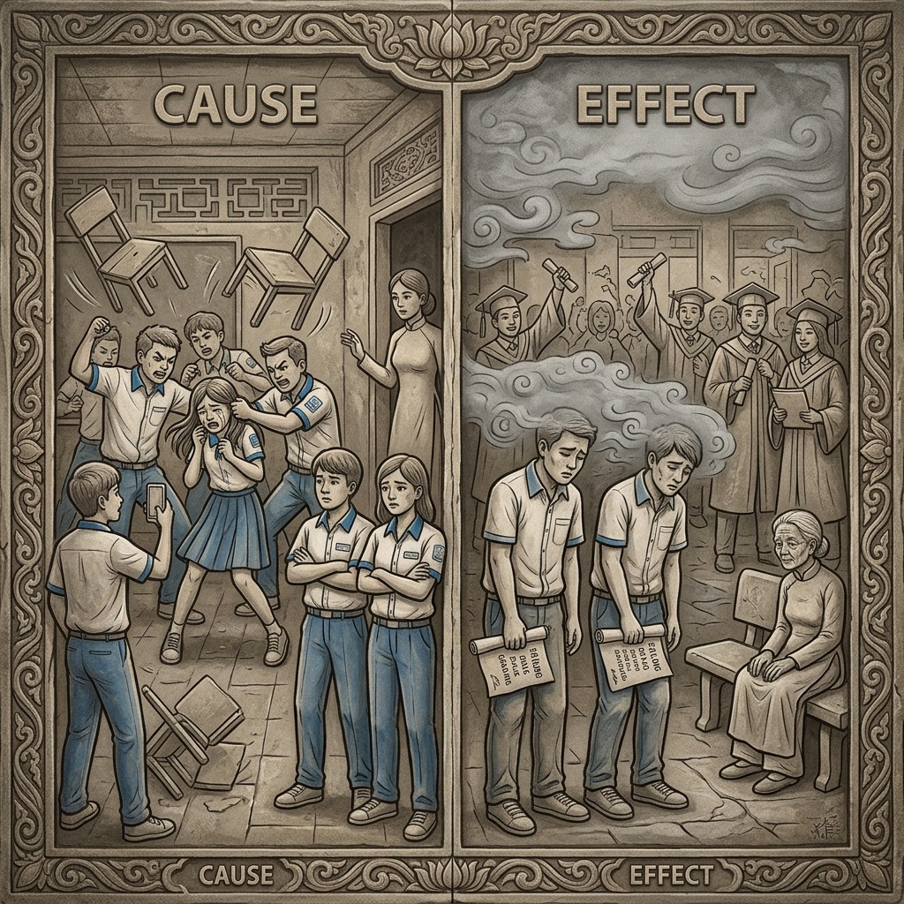
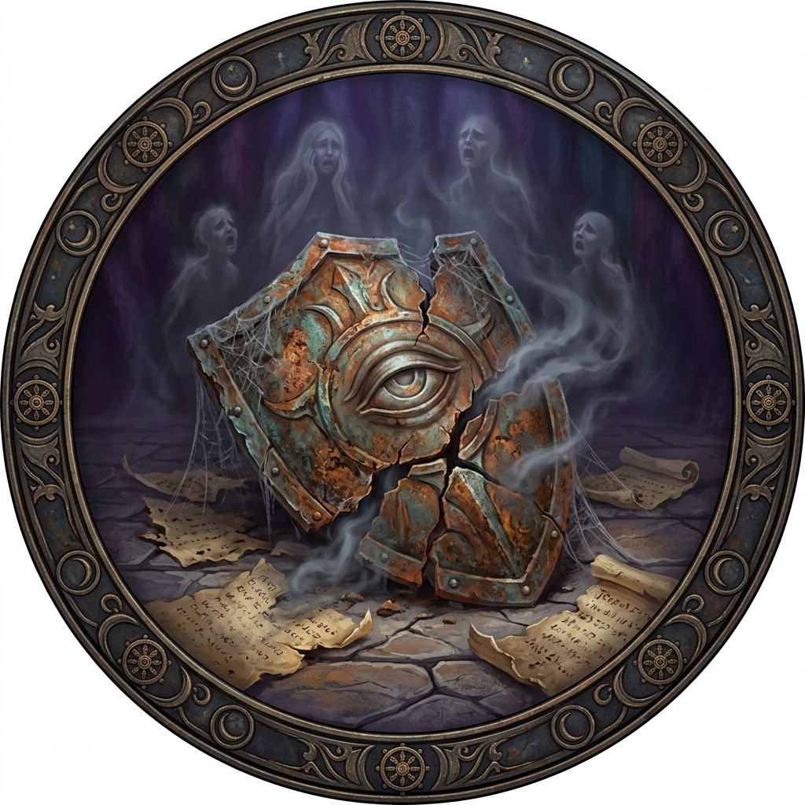
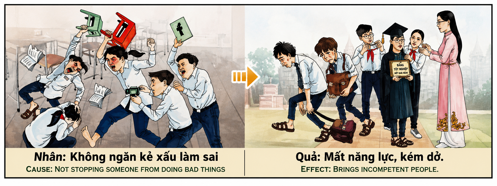

La Complicidad del Silencio y la Erosión del Talento The Complicity of Silence and the Erosion of Talent La complicità del silenzio e l'erosione del talento 沉默与人才的侵蚀是共谋 تواطؤ الصمت وتآكل الموهبة Соучастие молчания и эрозия таланта Die Komplizenschaft des Schweigens und die Erosion des Talents La complicité du silence et l’érosion des talents 沈黙の共犯と才能の浸食 A cumplicidade do silêncio e a erosão do talento Sự Đồng Lõa Của Im Lặng Và Sự Xói Mòn Tài Năng
"Quien presencia el mal y calla, quien tiene el poder de detener la injusticia y cruza los brazos, no es inocente: es cómplice invisible del dolor ajeno. El karma le responde erosionando su propia capacidad, nublando su mente y secando su talento, hasta que renace en la niebla de la incompetencia, incapaz de resolver incluso lo que un niño comprendería." "He who witnesses evil and stays silent, who has the power to stop injustice and folds his arms, is not innocent: he is an invisible accomplice to another's pain. Karma responds by eroding his own capacity, clouding his mind and drying his talent, until he is reborn in the fog of incompetence, unable to solve even what a child would understand." "Chi è testimone del male e tace, chi ha il potere di fermare l'ingiustizia e incrocia le braccia, non è innocente: è un complice invisibile del dolore degli altri. Il karma risponde erodendo le proprie capacità, annebbiando la sua mente e inaridendo il suo talento, fino a rinascere nella nebbia dell'incompetenza, incapace di risolvere anche ciò che un bambino capirebbe." “目睹邪恶却保持沉默的人，有权制止不公正并双臂交叉的人，并不是无辜的：他是他人痛苦的隐形帮凶。业力的反应是侵蚀他自己的能力，蒙蔽他的思想，枯竭他的才能，直到他在无能的迷雾中重生，甚至无法解决连孩子都能理解的问题。” "من يشهد الشر ويبقى صامتًا، ومن لديه القدرة على وقف الظلم وعقد ذراعيه، ليس بريئًا: إنه شريك غير مرئي في آلام الآخرين. تستجيب الكارما بتآكل قدرته، وتعتيم عقله وتجفيف موهبته، حتى يولد من جديد في ضباب عدم الكفاءة، غير قادر على حل حتى ما قد يفهمه طفل." «Тот, кто становится свидетелем зла и хранит молчание, кто обладает силой остановить несправедливость и скрещивает руки на груди, не невиновен: он невидимый соучастник боли других. Карма отвечает, разрушая его собственные способности, затуманивая его разум и иссушая его талант, пока он не переродится в тумане некомпетентности, неспособный решить даже то, что может понять ребенок». „Wer das Böse sieht und schweigt, wer die Macht hat, Ungerechtigkeit zu stoppen und seine Arme verschränkt, ist nicht unschuldig: Er ist ein unsichtbarer Komplize des Schmerzes anderer. Karma reagiert, indem es seine eigenen Fähigkeiten untergräbt, seinen Geist trübt und sein Talent austrocknet, bis er im Nebel der Inkompetenz wiedergeboren wird und nicht einmal in der Lage ist, das zu lösen, was ein Kind verstehen würde.“ "Celui qui est témoin du mal et reste silencieux, qui a le pouvoir de mettre fin à l'injustice et croise les bras, n'est pas innocent : il est un complice invisible de la douleur des autres. Le Karma répond en érodant ses propres capacités, en obscurcissant son esprit et en asséchant son talent, jusqu'à ce qu'il renaît dans le brouillard de l'incompétence, incapable même de résoudre ce qu'un enfant comprendrait." 「悪を目の当たりにして沈黙を守る者、不正を阻止して腕を組む力を持っている者は無実ではない。他人の痛みに対する目に見えない共犯者である。カルマは自らの能力を侵食し、心を曇らせ、才能を枯渇させることで反応し、ついには無能の霧の中に生まれ変わり、子供が理解できることさえ解決できなくなる。」 “Aquele que testemunha o mal e permanece calado, que tem o poder de deter a injustiça e cruza os braços, não é inocente: é um cúmplice invisível da dor dos outros. O carma responde corroendo a sua própria capacidade, nublando a sua mente e secando o seu talento, até renascer na névoa da incompetência, incapaz de resolver até mesmo o que uma criança entenderia.” "Kẻ chứng kiến điều ác mà im lặng, kẻ có sức mạnh ngăn chặn bất công mà khoanh tay đứng nhìn, không phải là vô tội: đó là kẻ đồng lõa vô hình với nỗi đau của người khác. Nghiệp quả đáp trả bằng cách bào mòn năng lực của chính họ, che mờ tâm trí và làm cạn kiệt tài năng, cho đến khi tái sinh trong sương mù của sự bất tài, không thể giải quyết được ngay cả điều mà một đứa trẻ cũng hiểu."
Existe en el universo kármico una ley tan antigua como el primer amanecer: el poder conlleva responsabilidad, y la capacidad de actuar impone la obligación moral de hacerlo. Cuando un ser humano presencia un acto de maldad —ya sea violencia, abuso, intimidación, bullying o cualquier forma de injusticia— y tiene la capacidad real de intervenir pero elige deliberadamente no hacerlo, cruza un umbral invisible de complicidad cósmica. Este individuo no es un espectador neutral; se convierte en un cómplice silencioso del agresor, en un pilar invisible que sostiene la arquitectura del mal. Su silencio no es ausencia de acción: es una acción en sí misma, una decisión activa de permitir que el dolor del inocente continúe cuando estaba en su mano detenerlo.
La mecánica kármica de esta transgresión es de una precisión devastadora. El cosmos opera bajo el principio de coherencia funcional: cada facultad que un ser posee —inteligencia, fuerza, elocuencia, habilidad— le fue otorgada como herramienta de servicio al bienestar colectivo. Cuando esa facultad se niega a cumplir su función protectora y se refugia en la cobardía del silencio, el universo interpreta que esa capacidad ya no cumple su propósito y procede a retirarla gradualmente, como se retira el agua de un canal que nadie utiliza. La inteligencia que no defiende al débil se nubla. La elocuencia que no denuncia la injusticia se marchita. La habilidad que no protege al inocente se oxida. El karma no castiga: simplemente redistribuye las herramientas hacia manos que sí las usarán.
En esta misma existencia, el observador pasivo experimenta un deterioro progresivo y misterioso de sus capacidades mentales y profesionales. La concentración se fragmenta. La memoria falla en momentos cruciales. Las ideas brillantes que antes brotaban con facilidad se secan como un manantial obstruido. El individuo nota con alarma creciente que cada año es un poco menos competente, un poco más mediocre, un poco más incapaz de resolver problemas que antes dominaba con soltura. Los compañeros lo superan. Las oportunidades se evaporan. Los ascensos pasan de largo. No comprende que su declive no es accidental ni producto de la mala suerte: es la consecuencia directa y proporcional de haber abandonado a otros cuando más necesitaban su capacidad.
En la siguiente encarnación, esta deuda kármica se amplifica de manera proporcional al daño que su silencio facilitó. El alma renace con una predisposición congénita a la confusión mental, a la lentitud cognitiva y a la incapacidad para completar tareas que otros encuentran elementales. Nace con un talento latente que nunca logra activar, como un motor que gira pero no enciende, porque en su vida anterior tenía el motor encendido y se negó a usarlo cuando alguien pedía auxilio. La lección suprema de este karma es que nuestro Ikigai —nuestro propósito vital— no puede construirse sobre la pasividad cómplice. El verdadero propósito de vida florece cuando ponemos nuestras capacidades al servicio de la justicia, cuando levantamos la voz contra el abuso, cuando interponemos nuestro cuerpo entre el agresor y la víctima. Solo así nuestro talento permanece afilado, nuestra mente clara y nuestro destino luminoso.
There exists in the karmic universe a law as ancient as the first dawn: power carries responsibility, and the capacity to act imposes the moral obligation to do so. When a human being witnesses an act of evil—whether violence, abuse, intimidation, bullying, or any form of injustice—and has the real capacity to intervene but deliberately chooses not to, they cross an invisible threshold of cosmic complicity. This individual is not a neutral spectator; they become a silent accomplice of the aggressor, an invisible pillar upholding the architecture of evil. Their silence is not the absence of action: it is an action in itself, an active decision to allow the innocent's pain to continue when it was within their power to stop it.
The karmic mechanics of this transgression operate with devastating precision. The cosmos functions under the principle of functional coherence: every faculty a being possesses—intelligence, strength, eloquence, skill—was granted as a tool for serving collective wellbeing. When that faculty refuses to fulfill its protective function and takes refuge in the cowardice of silence, the universe interprets that capacity as no longer serving its purpose and proceeds to withdraw it gradually, as water is withdrawn from a canal that no one uses. Intelligence that does not defend the weak becomes clouded. Eloquence that does not denounce injustice withers. Skill that does not protect the innocent rusts. Karma does not punish: it simply redistributes tools to hands that will actually use them.
In this very existence, the passive observer experiences a progressive and mysterious deterioration of their mental and professional capacities. Concentration fragments. Memory fails at crucial moments. The brilliant ideas that once flowed easily dry up like an obstructed spring. The individual notices with growing alarm that each year they become a little less competent, a little more mediocre, a little more incapable of solving problems they once mastered with ease. Colleagues surpass them. Opportunities evaporate. Promotions pass them by. They do not understand that their decline is neither accidental nor the product of bad luck: it is the direct and proportional consequence of having abandoned others when they most needed their capability.
In the next incarnation, this karmic debt is amplified in proportion to the damage that their silence facilitated. The soul is reborn with a congenital predisposition to mental confusion, cognitive slowness, and an inability to complete tasks that others find elementary. They are born with a latent talent they can never activate, like an engine that turns but won't start, because in their previous life they had the engine running and refused to use it when someone cried for help. The supreme lesson of this karma is that our Ikigai—our life purpose—cannot be built upon complicit passivity. True life purpose flourishes when we place our capacities in service of justice, when we raise our voice against abuse, when we place our body between the aggressor and the victim. Only then does our talent remain sharp, our mind clear, and our destiny luminous.
Esiste nell'universo karmico una legge antica quanto la prima alba: con il potere deriva la responsabilità, e la capacità di agire impone l'obbligo morale di farlo. Quando un essere umano è testimone di un atto malvagio – che si tratti di violenza, abuso, intimidazione, bullismo o qualsiasi forma di ingiustizia – e ha la reale capacità di intervenire ma sceglie deliberatamente di non farlo, attraversa una soglia invisibile di complicità cosmica. Questo individuo non è uno spettatore neutrale; Diventa un complice silenzioso dell'aggressore, un pilastro invisibile che sostiene l'architettura del male. Il suo silenzio non è un'assenza di azione: è un'azione in sé, una decisione attiva per permettere che il dolore dell'innocente continuasse quando era in suo potere fermarlo.
I meccanismi karmici di questa trasgressione sono estremamente precisi. Il cosmo opera secondo il principio della coerenza funzionale: ogni facoltà che un essere possiede – intelligenza, forza, eloquenza, abilità – gli è stata donata come strumento di servizio per il benessere collettivo. Quando questa facoltà rifiuta di adempiere alla sua funzione protettiva e si rifugia nella codardia del silenzio, l'universo interpreta che questa capacità non soddisfa più il suo scopo e procede a ritirarla gradualmente, come si toglie l'acqua da un canale che nessuno utilizza. L’intelligenza che non difende i deboli si offusca. L'eloquenza che non denuncia l'ingiustizia appassisce. La capacità che non protegge gli innocenti arrugginisce. Il karma non punisce: semplicemente ridistribuisce gli strumenti alle mani che li utilizzeranno.
In questa stessa esistenza, l'osservatore passivo sperimenta un progressivo e misterioso deterioramento delle sue capacità mentali e professionali. La concentrazione è frammentata. La memoria viene meno nei momenti cruciali. Le idee brillanti che una volta scorrevano si seccano facilmente come una sorgente intasata. L'individuo nota con crescente allarme che ogni anno è un po' meno competente, un po' più mediocre, un po' più incapace di risolvere problemi che prima padroneggiava con facilità. I compagni se la passano. Le opportunità evaporano. Le promozioni passano. Non capisce che il suo declino non è né casuale né frutto di sfortuna: è la conseguenza diretta e proporzionale di aver abbandonato gli altri quando avevano più bisogno delle sue capacità.
Nella prossima incarnazione, questo debito karmico sarà amplificato proporzionalmente al danno facilitato dal tuo silenzio. L'anima rinasce con una predisposizione congenita alla confusione mentale, alla lentezza cognitiva e all'incapacità di completare compiti che gli altri trovano elementari. Nasce con un talento latente che non riesce mai ad attivare, come un motore che gira ma non si avvia, perché nella vita precedente aveva il motore acceso e si rifiutava di usarlo quando qualcuno chiamava i soccorsi. La lezione suprema di questo karma è che il nostro Ikigai – lo scopo della nostra vita – non può essere costruito sulla passività complice. Il vero scopo della vita fiorisce quando mettiamo le nostre capacità al servizio della giustizia, quando alziamo la voce contro gli abusi, quando poniamo il nostro corpo tra l’aggressore e la vittima. Solo così il nostro talento resta affilato, la nostra mente lucida e il nostro destino luminoso.
在业力宇宙中存在着一条自黎明以来就古老的法则：权力伴随着责任，行动的能力强加了这样做的道德义务。当一个人目睹邪恶行为——无论是暴力、虐待、恐吓、欺凌还是任何形式的不公正——并且有真正的能力进行干预但故意选择不干预时，他们就跨越了宇宙同谋的无形门槛。这个人不是一个中立的旁观者；他成为侵略者的无声同谋，成为支撑邪恶建筑的无形支柱。他的沉默并不意味着没有采取行动：这本身就是一种行动，是一种积极的决定，当他有能力阻止无辜者的痛苦时，他却允许这种痛苦继续下去。
这种违法行为的业力机制极其精确。宇宙按照功能一致性原则运行：一个生物所拥有的每一种能力——智力、力量、口才、能力——都被赋予作为集体福祉的服务工具。当这种能力拒绝履行其保护功能并在沉默的怯懦中寻求庇护时，宇宙就会解释为这种能力不再实现其目的，并逐渐将其撤回，就像水从无人使用的运河中被抽走一样。不保护弱者的情报就会变得阴暗。不谴责不公正的雄辩就会枯萎。不保护无辜生锈的能力。业力不会惩罚：它只是将工具重新分配给使用它们的人。
在同样的存在中，被动的观察者经历了他的精神和专业能力逐渐而神秘的退化。注意力分散。关键时刻记忆力就失效了。曾经流淌的辉煌想法就像堵塞的泉水一样容易干涸。人们越来越警觉地发现，自己的能力逐年下降，变得平庸，更无法解决他以前轻松掌握的问题。队友们都克服了。机会消失了。促销活动过去了。他不明白自己的衰落既不是偶然，也不是运气不好的结果：这是在别人最需要他的能力时抛弃了他们的直接后果。
在下一个转世中，这种业力债务会随着你的沉默造成的伤害成比例地放大。灵魂重生后就具有先天性的精神混乱、认知迟缓以及无法完成别人认为基本的任务的倾向。他与生俱来就拥有一种永远无法激活的天赋，就像一台转动但无法启动的引擎，因为前世他开着引擎，当有人呼救时他拒绝使用它。这种业力的最高教训是，我们的生命目标——我们的人生目标——不能建立在同谋被动的基础上。当我们用自己的能力为正义服务时，当我们大声疾呼反对虐待时，当我们将自己的身体置于侵略者和受害者之间时，生活的真正目的就会蓬勃发展。只有这样，我们的才华才能保持敏锐，我们的头脑才能清晰，我们的命运才能光明。
يوجد في الكون الكرمي قانون قديم قدم الفجر الأول: مع القوة تأتي المسؤولية، والقدرة على الفعل تفرض الالتزام الأخلاقي بالقيام بذلك. عندما يشهد إنسان عملاً شريرًا - سواء كان عنفًا أو إساءة أو تخويفًا أو تنمرًا أو أي شكل من أشكال الظلم - ولديه القدرة الحقيقية على التدخل ولكنه يختار عمدًا عدم القيام بذلك، فإنه يعبر عتبة غير مرئية من التواطؤ الكوني. هذا الفرد ليس متفرجًا محايدًا؛ يصبح شريكًا صامتًا للمعتدي، عمودًا غير مرئي يدعم عمارة الشر. صمته ليس غيابًا عن الفعل: إنه فعل في حد ذاته، قرار نشط للسماح لألم الأبرياء بالاستمرار عندما كان في وسعه إيقافه.
إن آليات الكارما لهذا الانتهاك دقيقة بشكل مدمر. يعمل الكون وفقًا لمبدأ التماسك الوظيفي: كل ملكة يمتلكها أي كائن - الذكاء، والقوة، والبلاغة، والقدرة - مُنحت له كأداة خدمة للرفاهية الجماعية. وعندما ترفض هذه القوة القيام بوظيفتها الوقائية وتلجأ إلى جبن الصمت، يفسر الكون أن هذه القدرة لم تعد تؤدي غرضها فيشرع في سحبها تدريجيا، كما يتم سحب الماء من قناة لا يستخدمها أحد. الذكاء الذي لا يدافع عن الضعيف يصبح غائما. البلاغة التي لا تستنكر الظلم تذبل. القدرة التي لا تحمي الأبرياء تصدأ. الكارما لا تعاقب: إنها ببساطة تعيد توزيع الأدوات على الأيدي التي ستستخدمها.
وفي هذا الوجود نفسه، يعاني المراقب السلبي من تدهور تدريجي وغامض لقدراته العقلية والمهنية. التركيز مجزأ. تفشل الذاكرة في اللحظات الحاسمة. الأفكار الرائعة التي كانت تتدفق ذات يوم تجف بسهولة مثل الربيع المسدود. ويلاحظ الفرد بقلق متزايد أنه في كل عام يصبح أقل كفاءة قليلاً، وأكثر تواضعاً قليلاً، وأكثر عجزاً قليلاً عن حل المشكلات التي كان يتقنها بسهولة في السابق. زملاء الفريق يتغلبون على الأمر. الفرص تتبخر. الترقيات تمر. إنه لا يفهم أن تراجعه ليس عرضيًا ولا نتيجة لسوء الحظ: بل هو نتيجة مباشرة ومتناسبة لتخليه عن الآخرين عندما كانوا في أمس الحاجة إلى قدرته.
في التجسد التالي، يتم تضخيم هذا الدين الكارمي بشكل متناسب مع الضرر الذي سهّله صمتك. تولد الروح من جديد مع استعداد فطري للارتباك العقلي، والبطء المعرفي، وعدم القدرة على إكمال المهام التي يجدها الآخرون أساسية. يولد بموهبة كامنة لا يتمكن من تفعيلها أبدًا، مثل المحرك الذي يدور لكنه لا يعمل، لأنه في حياته السابقة كان المحرك يعمل ويرفض استخدامه عندما يطلب شخص ما المساعدة. الدرس الأهم من هذه الكارما هو أن إيكيجاي - هدف حياتنا - لا يمكن أن يبنى على السلبية المتواطئة. إن الهدف الحقيقي للحياة يزدهر عندما نضع قدراتنا في خدمة العدالة، وعندما نرفع أصواتنا ضد الإساءة، وعندما نضع أجسادنا بين المعتدي والضحية. بهذه الطريقة فقط تبقى موهبتنا حادة، وعقلنا صافيًا، ومصيرنا مضيء.
В кармической вселенной существует закон, древний, как первый рассвет: с силой приходит ответственность, а способность действовать налагает моральное обязательство поступать так. Когда человек становится свидетелем акта зла – будь то насилие, оскорбление, запугивание, издевательство или любая форма несправедливости – и имеет реальную возможность вмешаться, но сознательно предпочитает не делать этого, он пересекает невидимый порог космического соучастия. Этот человек не является нейтральным зрителем; Он становится молчаливым сообщником агрессора, невидимой опорой, поддерживающей архитектуру зла. Его молчание — это не отсутствие действия: это действие само по себе, активное решение позволить боли невиновного продолжаться, когда в его силах остановить ее.
Кармическая механика этого нарушения убийственно точна. Космос действует по принципу функциональной согласованности: каждая способность, которой обладает существо — интеллект, сила, красноречие, способности — была дана ему в качестве служебного инструмента для коллективного благополучия. Когда эта способность отказывается выполнять свою защитную функцию и укрывается в трусости молчания, Вселенная интерпретирует, что эта способность больше не выполняет своего предназначения, и начинает постепенно изымать ее, как вода удаляется из канала, которым никто не пользуется. Разум, который не защищает слабых, затуманивается. Красноречие, не осуждающее несправедливость, увядает. Способность, не защищающая невинных, ржавеет. Карма не наказывает: она просто перераспределяет инструменты в руки, которые будут ими пользоваться.
В этом же существовании пассивный наблюдатель переживает прогрессирующее и загадочное ухудшение своих умственных и профессиональных способностей. Концентрация фрагментирована. Память подводит в решающие моменты. Блестящие идеи, которые когда-то текли, легко высыхают, как засорившийся источник. Индивид с растущей тревогой замечает, что с каждым годом он становится чуть менее компетентным, чуть более посредственным, чуть более неспособным решать проблемы, с которыми раньше с легкостью справлялся. Товарищи по команде справятся с этим. Возможности испаряются. Акции проходят мимо. Он не понимает, что его упадок не является ни случайностью, ни результатом невезения: это прямое и пропорциональное следствие того, что он бросил других, когда они больше всего нуждались в его способностях.
В следующем воплощении этот кармический долг усиливается пропорционально ущербу, которому способствовало ваше молчание. Душа перерождается с врожденной предрасположенностью к умственной спутанности, когнитивной медлительности и неспособности выполнять задачи, которые другие считают элементарными. Он рождается со скрытым талантом, который ему никогда не удается активировать, как двигатель, который крутится, но не заводится, потому что в прошлой жизни он держал двигатель включенным и отказывался использовать его, когда кто-то звал на помощь. Высший урок этой кармы заключается в том, что наш Икигай – наша жизненная цель – не может быть построена на соучастии в пассивности. Истинная цель жизни расцветает, когда мы ставим наши способности на службу справедливости, когда мы поднимаем голос против жестокого обращения, когда мы ставим свое тело между агрессором и жертвой. Только так наш талант останется острым, ум ясным, а судьба светлой.
Es gibt im karmischen Universum ein Gesetz, das so alt ist wie die Morgendämmerung: Mit Macht geht Verantwortung einher, und die Fähigkeit zu handeln erlegt die moralische Verpflichtung auf, dies zu tun. Wenn ein Mensch Zeuge einer bösen Tat wird – sei es Gewalt, Missbrauch, Einschüchterung, Mobbing oder irgendeine Form von Ungerechtigkeit – und tatsächlich die Fähigkeit besitzt, einzugreifen, sich aber bewusst dagegen entscheidet, überschreitet er eine unsichtbare Schwelle kosmischer Mitschuld. Dieses Individuum ist kein neutraler Zuschauer; Er wird zum stillen Komplizen des Angreifers, zu einer unsichtbaren Säule, die die Architektur des Bösen stützt. Sein Schweigen ist keine Abwesenheit von Handeln: Es ist ein Handeln an sich, eine aktive Entscheidung, den Schmerz des Unschuldigen weitergehen zu lassen, obwohl es in seiner Macht stand, ihn zu stoppen.
Die karmischen Mechanismen dieser Übertretung sind verheerend präzise. Der Kosmos funktioniert nach dem Prinzip der funktionalen Kohärenz: Jede Fähigkeit, die ein Lebewesen besitzt – Intelligenz, Stärke, Beredsamkeit, Fähigkeit – wurde ihm als Dienstinstrument für das kollektive Wohlergehen gegeben. Wenn diese Fähigkeit sich weigert, ihre Schutzfunktion zu erfüllen, und sich in die Feigheit des Schweigens flüchtet, interpretiert das Universum, dass diese Fähigkeit ihren Zweck nicht mehr erfüllt, und entzieht sie ihr nach und nach, so wie Wasser aus einem Kanal entfernt wird, den niemand nutzt. Intelligenz, die die Schwachen nicht verteidigt, wird getrübt. Beredsamkeit, die Ungerechtigkeit nicht anprangert, verkümmert. Die Fähigkeit, die die Unschuldigen nicht schützt, rostet. Karma bestraft nicht: Es verteilt die Werkzeuge einfach an die Hände, die sie nutzen.
In dieser Existenz erlebt der passive Beobachter einen fortschreitenden und mysteriösen Verfall seiner geistigen und beruflichen Fähigkeiten. Die Konzentration ist fragmentiert. Das Gedächtnis versagt in entscheidenden Momenten. Brillante Ideen, die einst flossen, versiegen schnell wie eine verstopfte Quelle. Der Einzelne bemerkt mit zunehmender Besorgnis, dass er von Jahr zu Jahr ein wenig weniger kompetent, ein wenig mittelmäßiger, ein wenig unfähiger wird, Probleme zu lösen, die er zuvor mit Leichtigkeit gemeistert hat. Die Teamkollegen kommen darüber hinweg. Chancen verschwinden. Die Werbeaktionen vergehen. Er versteht nicht, dass sein Niedergang weder ein Zufall noch eine Folge von Pech ist: Er ist die direkte und proportionale Folge davon, dass er andere verlassen hat, als sie seine Fähigkeiten am meisten brauchten.
In der nächsten Inkarnation wird diese karmische Schuld proportional zum Schaden, den Ihr Schweigen verursacht hat, verstärkt. Die Seele wird mit einer angeborenen Veranlagung zu geistiger Verwirrung, kognitiver Langsamkeit und der Unfähigkeit, Aufgaben zu erledigen, die andere als elementar empfinden, wiedergeboren. Er wird mit einem latenten Talent geboren, das er nie aktivieren kann, wie ein Motor, der sich dreht, aber nicht anspringt, weil er in seinem früheren Leben den Motor eingeschaltet hatte und sich weigerte, ihn zu benutzen, wenn jemand um Hilfe rief. Die wichtigste Lehre aus diesem Karma ist, dass unser Ikigai – unser Lebenszweck – nicht auf mitschuldiger Passivität aufgebaut werden kann. Der wahre Sinn des Lebens entfaltet sich, wenn wir unsere Fähigkeiten in den Dienst der Gerechtigkeit stellen, wenn wir unsere Stimme gegen Missbrauch erheben, wenn wir unseren Körper zwischen den Angreifer und das Opfer stellen. Nur so bleibt unser Talent scharf, unser Geist klar und unser Schicksal leuchtend.
Il existe dans l'univers karmique une loi vieille comme l'aube : avec le pouvoir vient la responsabilité, et la capacité d'agir impose l'obligation morale de le faire. Lorsqu’un être humain est témoin d’un acte maléfique – qu’il s’agisse de violence, d’abus, d’intimidation, d’intimidation ou de toute forme d’injustice – et qu’il a la capacité réelle d’intervenir mais choisit délibérément de ne pas le faire, il franchit un seuil invisible de complicité cosmique. Cet individu n'est pas un spectateur neutre ; Il devient un complice silencieux de l’agresseur, un pilier invisible qui soutient l’architecture du mal. Son silence n'est pas une absence d'action : c'est une action en soi, une décision active de permettre à la douleur de l'innocent de continuer alors qu'il était en son pouvoir de l'arrêter.
Les mécanismes karmiques de cette transgression sont d’une précision dévastatrice. Le cosmos fonctionne selon le principe de cohérence fonctionnelle : chaque faculté que possède un être – intelligence, force, éloquence, capacité – lui a été donnée comme un outil au service du bien-être collectif. Lorsque cette faculté refuse de remplir sa fonction protectrice et se réfugie dans la lâcheté du silence, l'univers interprète que cette capacité ne remplit plus sa fonction et procède à son retrait progressif, comme l'eau est retirée d'un canal que personne n'utilise. L’intelligence qui ne défend pas les faibles devient obscurcie. L’éloquence qui ne dénonce pas l’injustice dépérit. La capacité qui ne protège pas les rouilles innocentes. Le karma ne punit pas : il redistribue simplement les outils aux mains qui les utiliseront.
Dans cette même existence, l'observateur passif connaît une détérioration progressive et mystérieuse de ses capacités mentales et professionnelles. La concentration est fragmentée. La mémoire fait défaut à des moments cruciaux. Les idées brillantes qui coulaient autrefois facilement se tarissent comme une source bouchée. L'individu constate avec une inquiétude croissante qu'il est chaque année un peu moins compétent, un peu plus médiocre, un peu plus incapable de résoudre des problèmes qu'il maîtrisait auparavant avec aisance. Les coéquipiers s’en remettent. Les opportunités s’évaporent. Les promotions passent. Il ne comprend pas que son déclin n’est ni accidentel ni dû à la malchance : c’est la conséquence directe et proportionnelle du fait d’avoir abandonné les autres au moment où ils avaient le plus besoin de ses capacités.
Dans l’incarnation suivante, cette dette karmique s’amplifie proportionnellement aux dégâts que votre silence a facilités. L’âme renaît avec une prédisposition congénitale à la confusion mentale, à la lenteur cognitive et à l’incapacité d’accomplir des tâches que d’autres trouvent élémentaires. Il est né avec un talent latent qu'il n'arrive jamais à activer, comme un moteur qui tourne mais ne démarre pas, car dans sa vie antérieure, il avait le moteur allumé et refusait de l'utiliser lorsque quelqu'un appelait à l'aide. La leçon suprême de ce karma est que notre Ikigai – notre objectif de vie – ne peut pas être construit sur une passivité complice. Le véritable but de la vie s'épanouit lorsque nous mettons nos capacités au service de la justice, lorsque nous élevons la voix contre les abus, lorsque nous plaçons notre corps entre l'agresseur et la victime. C'est seulement ainsi que notre talent reste aiguisé, notre esprit clair et notre destin lumineux.
カルマの宇宙には、黎明期の頃からある法則が存在します。それは、力には責任が伴い、行動する能力にはそうする道徳的義務が課されるというものです。人間が、暴力、虐待、脅迫、いじめ、その他あらゆる形態の不正義などの悪の行為を目撃し、実際に介入する能力があるにもかかわらず、意図的に介入しないことを選択した場合、彼らは宇宙的共謀という目に見えない閾値を越えてしまいます。この人物は中立的な観客ではありません。彼は侵略者の沈黙の共犯者となり、悪の構造を支える目に見えない柱となります。彼の沈黙は行動の欠如ではありません。それはそれ自体が行動であり、罪のない人の苦痛を止めることが彼の権限にあったときにそれを継続させるという積極的な決定です。
この罪のカルマの仕組みは壊滅的なほど正確です。宇宙は機能的一貫性の原則に基づいて機能します。つまり、知性、強さ、雄弁さ、能力など、生物が持つ各能力は、集団の幸福のための奉仕ツールとして生物に与えられたものです。この能力がその保護機能を果たすことを拒否し、沈黙という卑劣な行為に逃げ込むと、宇宙はこの能力がもはやその目的を果たさないと解釈し、誰も使わない運河から水が除去されるように、徐々に能力を撤廃していく。弱者を守らない知性は曇る。不正を非難しない雄弁は萎える。無垢を守れない能力が錆びる。カルマは罰するものではありません。単にツールを使用する手に再配布するだけです。
この同じ存在の中で、受動的観察者は精神的および職業的能力の漸進的かつ不可解な劣化を経験します。集中力が断片的になる。重要な瞬間に記憶が失われます。かつて流れ出た素晴らしいアイデアも、詰まった泉のように簡単に枯れてしまいます。その人は、年々、自分の能力が少しずつ低下し、少し平凡になり、以前は簡単にマスターしていた問題を少しずつ解決できなくなっていることに気づき、警戒を強めます。チームメイトはそれを乗り越えます。チャンスは蒸発していきます。プロモーションは通り過ぎます。彼は、自分の衰退が偶然でも不運の産物でもないことを理解していません。それは、他の人が彼の能力を最も必要としているときに見捨てたことの直接的かつ比例的な結果です。
次の転生では、このカルマ的負債は、あなたの沈黙が促進したダメージに比例して増幅されます。魂は、精神的混乱、認知の遅さ、他の人にとって初歩的な課題を完了できないという先天的な傾向を持って生まれ変わります。彼は、前世ではエンジンがかかっていて、誰かが助けを呼んでもそれを使用することを拒否したため、エンジンは回るが始動しないというように、自分では決して発揮することができない潜在的な才能を持って生まれました。このカルマの最大の教訓は、私たちの生きがい、つまり人生の目的は、共謀的な受動性の上に築くことはできないということです。人生の真の目的は、正義のために自分の能力を発揮するとき、虐待に対して声を上げるとき、攻撃者と被害者の間に自分の体を置くときに開花します。このようにしてのみ、私たちの才能は鋭く、精神は明晰で、運命は明るく保たれます。
Existe no universo cármico uma lei tão antiga quanto o primeiro amanhecer: com o poder vem a responsabilidade, e a capacidade de agir impõe a obrigação moral de fazê-lo. Quando um ser humano testemunha um ato de maldade – seja violência, abuso, intimidação, intimidação ou qualquer forma de injustiça – e tem a capacidade real de intervir, mas opta deliberadamente por não o fazer, atravessa um limiar invisível de cumplicidade cósmica. Este indivíduo não é um espectador neutro; Ele se torna um cúmplice silencioso do agressor, um pilar invisível que sustenta a arquitetura do mal. O seu silêncio não é uma ausência de ação: é uma ação em si, uma decisão ativa para permitir que a dor do inocente continue quando estava em seu poder pará-la.
A mecânica cármica desta transgressão é devastadoramente precisa. O cosmos opera sob o princípio da coerência funcional: cada faculdade que um ser possui – inteligência, força, eloqüência, habilidade – foi dada a ele como uma ferramenta de serviço para o bem-estar coletivo. Quando esta faculdade se recusa a cumprir a sua função protetora e se refugia na covardia do silêncio, o universo interpreta que esta capacidade já não cumpre o seu propósito e passa a retirá-la gradativamente, como se retira água de um canal que ninguém utiliza. A inteligência que não defende os fracos fica turva. A eloquência que não denuncia a injustiça murcha. A habilidade que não protege as ferrugem inocentes. O Karma não pune: simplesmente redistribui as ferramentas às mãos que as utilizarão.
Nesta mesma existência, o observador passivo experimenta uma deterioração progressiva e misteriosa das suas capacidades mentais e profissionais. A concentração é fragmentada. A memória falha em momentos cruciais. Idéias brilhantes que antes fluíam facilmente secam como uma fonte entupida. O indivíduo percebe com crescente alarme que a cada ano fica um pouco menos competente, um pouco mais medíocre, um pouco mais incapaz de resolver problemas que antes dominava com facilidade. Os companheiros superam isso. As oportunidades evaporam. As promoções passam. Ele não entende que o seu declínio não é acidental nem produto de azar: é a consequência direta e proporcional de ter abandonado outros quando eles mais precisavam da sua capacidade.
Na próxima encarnação, essa dívida cármica é ampliada proporcionalmente aos danos que o seu silêncio facilitou. A alma renasce com uma predisposição congênita à confusão mental, à lentidão cognitiva e à incapacidade de realizar tarefas que outros consideram elementares. Ele nasce com um talento latente que nunca consegue ativar, como um motor que gira mas não liga, pois na vida anterior ele estava com o motor ligado e se recusava a usá-lo quando alguém pedia ajuda. A lição suprema deste carma é que o nosso Ikigai – o nosso propósito de vida – não pode ser construído sobre a passividade cúmplice. O verdadeiro propósito da vida floresce quando colocamos as nossas capacidades ao serviço da justiça, quando levantamos a nossa voz contra os abusos, quando colocamos o nosso corpo entre o agressor e a vítima. Só assim o nosso talento permanece aguçado, a nossa mente clara e o nosso destino luminoso.
Trong vũ trụ nghiệp quả tồn tại một quy luật cổ xưa như bình minh đầu tiên: quyền năng đi kèm trách nhiệm, và khả năng hành động áp đặt nghĩa vụ đạo đức phải hành động. Khi một con người chứng kiến hành vi độc ác — dù là bạo lực, lạm dụng, hăm dọa, bắt nạt hay bất kỳ hình thức bất công nào — và có khả năng thực sự can thiệp nhưng cố tình chọn không làm gì, họ bước qua một ngưỡng cửa vô hình của sự đồng lõa vũ trụ. Cá nhân này không phải là khán giả trung lập; họ trở thành kẻ đồng lõa thầm lặng của kẻ gây hại, một trụ cột vô hình nâng đỡ kiến trúc của cái ác. Sự im lặng của họ không phải là sự vắng mặt của hành động: đó là một hành động tự thân, một quyết định chủ động cho phép nỗi đau của người vô tội tiếp diễn khi họ có trong tay sức mạnh để chấm dứt nó.
Cơ chế nghiệp quả của sự phạm tội này vận hành với độ chính xác tàn khốc. Vũ trụ hoạt động theo nguyên tắc nhất quán chức năng: mỗi năng lực mà một sinh linh sở hữu — trí thông minh, sức mạnh, tài hùng biện, kỹ năng — được ban tặng như công cụ phụng sự phúc lợi tập thể. Khi năng lực đó từ chối thực hiện chức năng bảo vệ và trốn vào sự hèn nhát của im lặng, vũ trụ hiểu rằng khả năng đó không còn phục vụ mục đích của nó và tiến hành thu hồi dần dần, như nước rút khỏi con kênh không ai sử dụng. Trí tuệ không bảo vệ kẻ yếu sẽ bị mây mù che phủ. Tài hùng biện không tố cáo bất công sẽ héo tàn. Kỹ năng không bảo vệ người vô tội sẽ rỉ sét. Nghiệp quả không trừng phạt: nó chỉ đơn giản phân phối lại công cụ cho những bàn tay thực sự sử dụng chúng.
Ngay trong kiếp sống này, người quan sát thụ động trải nghiệm sự suy thoái tiến triển và bí ẩn về năng lực trí tuệ và nghề nghiệp. Khả năng tập trung bị phân mảnh. Trí nhớ thất bại ở những thời khắc then chốt. Những ý tưởng sáng chói từng tuôn chảy dễ dàng giờ cạn kiệt như suối nguồn bị tắc nghẽn. Cá nhân nhận thấy với sự hoảng hốt ngày càng tăng rằng mỗi năm họ kém năng lực hơn một chút, tầm thường hơn một chút, bất lực hơn một chút trong việc giải quyết vấn đề mà trước đây họ làm chủ dễ dàng. Đồng nghiệp vượt qua họ. Cơ hội bốc hơi. Thăng tiến lướt qua. Họ không hiểu rằng sự suy thoái không phải ngẫu nhiên hay sản phẩm của vận rủi: đó là hệ quả trực tiếp và tương xứng của việc đã bỏ rơi người khác khi họ cần năng lực của mình nhất.
Trong kiếp sống tiếp theo, món nợ nghiệp quả này được khuếch đại tương xứng với thiệt hại mà sự im lặng đã tạo điều kiện. Linh hồn tái sinh với khuynh hướng bẩm sinh về sự rối loạn tinh thần, chậm chạp nhận thức và bất lực trong việc hoàn thành những nhiệm vụ mà người khác thấy đơn giản. Họ sinh ra với tài năng tiềm ẩn nhưng không bao giờ kích hoạt được, như động cơ quay mà không nổ, bởi vì kiếp trước họ có động cơ đang chạy nhưng từ chối sử dụng khi ai đó cầu cứu. Bài học tối thượng của nghiệp quả này là Ikigai — mục đích sống — không thể được xây dựng trên sự thụ động đồng lõa. Mục đích sống đích thực nở hoa khi chúng ta đặt năng lực phụng sự công lý, khi cất tiếng nói chống lại lạm dụng, khi đặt thân mình giữa kẻ gây hại và nạn nhân. Chỉ khi đó tài năng mới luôn sắc bén, tâm trí mới trong sáng, và vận mệnh mới rạng ngời.
El Guardián de la Puerta Cerrada
The Guardian of the Closed Door
Il guardiano della porta chiusa
关门的守护者
حارس الباب المغلق
Страж закрытой двери
Der Wächter der verschlossenen Tür
Le gardien de la porte fermée
閉ざされた扉の守護者
O Guardião da Porta Fechada
Người Canh Giữ Cánh Cửa Đóng Kín
En la academia imperial de Jade Blanco, la más prestigiosa escuela de formación de la provincia del río Perla, estudiaba un joven llamado Liang, dotado de una inteligencia prodigiosa y de una memoria que asombraba a los maestros más sabios. A los catorce años, Liang era capaz de recitar de memoria los cien poemas clásicos, de resolver ecuaciones de álgebra que confundían a los alumnos de último curso, y de caligrafiar caracteres con una precisión que rivalizaba con la de los copistas del palacio imperial. Los profesores lo señalaban como el candidato seguro para la gran beca del mandarinato, el premio más codiciado que abría las puertas de la función pública y del servicio al pueblo. Su Ikigai parecía trazado con tinta dorada: una vida dedicada al servicio justo, a la protección de los débiles y a la gestión sabia de los recursos del imperio.
Pero había una sombra en la academia de Jade Blanco. Un grupo de cinco estudiantes mayores, liderados por un joven brutal y corpulento llamado Kang, había convertido a una compañera tímida y frágil llamada Yue en su víctima constante. Kang y sus secuaces le arrebataban la comida del almuerzo, le destrozaban los cuadernos de estudio y la humillaban públicamente en el patio, obligándola a arrodillarse mientras uno de ellos grababa su llanto con una tablilla de arcilla para distribuir el dibujo por la escuela. Yue llegaba cada mañana con los ojos hinchados de llorar y la mirada hundida en el suelo, pero no se atrevía a denunciar a sus agresores porque Kang era hijo del magistrado local, y su poder sobre la escuela era absoluto.
Liang presenciaba estos abusos cada día. Los veía desde su pupitre, desde el patio, desde la escalera donde leía sus pergaminos. Veía a Yue suplicar con los ojos, veía sus manos temblar cuando Kang se acercaba, veía las lágrimas silenciosas que caían sobre sus cuadernos destruidos. Y Liang sentía un nudo de repulsión en el estómago, una voz interior que le gritaba: «¡Levántate! ¡Habla! ¡Defiéndela!» Pero Liang calculaba con su mente brillante: si intervenía, Kang lo convertiría en su próxima víctima; si denunciaba al maestro, el padre de Kang, el magistrado, lo expulsaría de la academia y perdería la beca. Así que Liang cruzaba los brazos, bajaba la mirada y seguía leyendo sus pergaminos, persuadiéndose a sí mismo de que no era asunto suyo, de que no había nada que pudiera hacer, de que su futuro brillante valía más que los moretones de una compañera. La maestra Lin, una mujer de túnica rosada que observaba todo desde la puerta del aula con expresión angustiada, tampoco actuaba: temía perder su puesto si confrontaba al hijo del magistrado.
Los meses pasaron. Yue, destruida por el acoso incesante y la soledad absoluta de no tener un solo defensor, abandonó la academia una noche de lluvia sin despedirse de nadie. Su pupitre quedó vacío como una tumba abierta. Liang miró el pupitre desierto durante días, sintiendo un frío inexplicable en el pecho, una punzada que no lograba identificar. A partir de ese momento, algo comenzó a cambiar en su mente prodigiosa. Los poemas que antes recitaba de memoria se le enredaban en la lengua. Las ecuaciones que antes resolvía con elegancia se convertían en laberintos indescifrables. Su caligrafía, antes perfecta, comenzó a temblar y a producir caracteres deformes. Los maestros lo atribuían al estrés del examen final, pero la decadencia se aceleró. En el examen de selección para la beca del mandarinato, Liang se quedó completamente en blanco ante la primera pregunta, una pregunta que un alumno de primer año habría respondido sin dificultad. Su mente, que había sido un palacio de cristal, se había convertido en una habitación llena de niebla espesa. Perdió la beca. Perdió la oportunidad de su vida.
Los años continuaron su marcha implacable. Liang, incapaz de comprender su propio declive, aceptó trabajos menores en una oficina administrativa donde cometía errores constantes que exasperaban a sus superiores. Su memoria, antes prodigiosa, fallaba en los momentos más críticos. Sus colegas, muchos de ellos intelectualmente inferiores a lo que Liang había sido, lo superaban sin esfuerzo y recibían los ascensos que a él se le escapaban. A los cuarenta años, Liang era un funcionario mediocre, olvidado por todos, sentado en un rincón polvoriento de una oficina gris, incapaz de completar informes que sus subalternos terminaban en minutos. Una tarde de otoño, mientras barría distraídamente el polvo de su escritorio, encontró un viejo pergamino enrollado: era un dibujo infantil que Yue le había regalado años atrás en la academia, un retrato de ambos sonriendo bajo un cerezo en flor, con una inscripción que decía: «Para Liang, el más inteligente de todos. Ojalá algún día uses tu luz para proteger a alguien.» El pergamino se le cayó de las manos. Las lágrimas brotaron como un río contenido durante décadas. Liang comprendió al fin, con una lucidez devastadora que le atravesó el cráneo como un rayo, que su talento no había muerto por accidente ni por enfermedad: se había extinguido porque él se negó a usarlo cuando más importaba. Su inteligencia era una espada que el universo le había dado para defender a los indefensos, y él la había guardado en su funda por cobardía. El cosmos se la había retirado porque un arma que no defiende a nadie no merece existir.
En su siguiente vida, Liang renació como un niño llamado Tam en una escuela rural donde, desde sus primeros días, mostró una lentitud cognitiva desconcertante. No podía memorizar la tabla de multiplicar que sus compañeros aprendían en una semana. No lograba completar un dictado sin cometer errores en cada línea. Su caligrafía era tan temblorosa que los maestros pensaban que sufría de un problema neurológico. Tam sentía dentro de sí una angustia inexplicable: percibía vagamente que había algo brillante y poderoso oculto en lo profundo de su mente, como una llama atrapada bajo una montaña de hielo, pero no lograba alcanzarlo. Un día, en el patio de la escuela, Tam vio a tres niños mayores acorralando a una niña pequeña y tímida, arrebatándole su cuaderno y empujándola al suelo. Algo antiguo, ardiente e irresistible se encendió en el pecho de Tam. Sin pensar, sin calcular, sin medir las consecuencias, Tam se interpuso entre los agresores y la niña con los brazos abiertos, gritando con una voz que ni él mismo reconoció: «¡BASTA! ¡No la toquéis!» Los agresores, sorprendidos por la ferocidad inesperada de aquel niño torpe y callado, retrocedieron. Tam tendió la mano a la niña caída y la ayudó a levantarse. En el instante exacto en que la mano de la niña tocó la suya, Tam sintió que la montaña de hielo en su mente se resquebrajaba con un estruendo silencioso. Esa noche, por primera vez en su vida, Tam logró recitar de memoria una estrofa completa de un poema sin equivocarse. Una pequeña grieta de luz se había abierto en la niebla de su mente: la primera chispa de un talento que comenzaba a despertar porque, al fin, había sido usado para lo que fue concebido.
At the imperial academy of White Jade, the most prestigious training school in the Pearl River province, there studied a young man named Liang, gifted with prodigious intelligence and a memory that astonished the wisest teachers. At fourteen, Liang could recite the hundred classical poems from memory, solve algebra equations that confounded final-year students, and calligraph characters with a precision rivaling the imperial palace copyists. The professors singled him out as the certain candidate for the great mandarin scholarship, the most coveted prize that opened the doors to public service and to serving the people. His Ikigai seemed traced in golden ink: a life dedicated to just service, to protecting the weak, and to the wise management of the empire's resources.
But there was a shadow at the White Jade Academy. A group of five older students, led by a brutal and burly youth named Kang, had turned a timid and frail classmate named Yue into their constant victim. Kang and his henchmen snatched her lunch, destroyed her study notebooks, and publicly humiliated her in the courtyard, forcing her to kneel while one of them recorded her crying on a clay tablet to distribute the drawing throughout the school. Yue arrived each morning with eyes swollen from weeping and her gaze sunk into the ground, but she dared not report her tormentors because Kang was the son of the local magistrate, and his power over the school was absolute.
Liang witnessed these abuses every day. He saw them from his desk, from the courtyard, from the stairway where he read his scrolls. He saw Yue plead with her eyes, saw her hands tremble when Kang approached, saw the silent tears that fell upon her destroyed notebooks. And Liang felt a knot of revulsion in his stomach, an inner voice screaming at him: 'Stand up! Speak! Defend her!' But Liang calculated with his brilliant mind: if he intervened, Kang would make him the next victim; if he reported to the teacher, Kang's father, the magistrate, would expel him from the academy and he would lose his scholarship. So Liang crossed his arms, lowered his gaze, and continued reading his scrolls, persuading himself that it was not his business, that there was nothing he could do, that his brilliant future was worth more than a classmate's bruises. Teacher Lin, a woman in a pink robe who watched everything from the classroom doorway with an anguished expression, also failed to act: she feared losing her position if she confronted the magistrate's son.
The months passed. Yue, destroyed by the relentless harassment and the absolute loneliness of having not a single defender, abandoned the academy one rainy night without saying goodbye to anyone. Her desk remained empty like an open grave. Liang stared at the deserted desk for days, feeling an inexplicable coldness in his chest, a sting he could not identify. From that moment, something began to change in his prodigious mind. The poems he once recited from memory tangled on his tongue. The equations he once solved with elegance became indecipherable labyrinths. His calligraphy, once perfect, began to tremble and produce deformed characters. The teachers attributed it to the stress of the final examination, but the decline accelerated. In the selection exam for the mandarin scholarship, Liang went completely blank before the first question—a question a first-year student would have answered without difficulty. His mind, which had been a crystal palace, had become a room filled with thick fog. He lost the scholarship. He lost the opportunity of a lifetime.
The years continued their relentless march. Liang, unable to comprehend his own decline, accepted minor positions in an administrative office where he made constant errors that exasperated his superiors. His once prodigious memory failed at the most critical moments. His colleagues, many of them intellectually inferior to what Liang had been, surpassed him effortlessly and received the promotions that slipped away from him. At forty, Liang was a mediocre functionary, forgotten by all, sitting in a dusty corner of a grey office, unable to complete reports his subordinates finished in minutes. One autumn afternoon, while absent-mindedly brushing dust from his desk, he found an old rolled-up scroll: it was a childhood drawing Yue had given him years ago at the academy, a portrait of the two of them smiling beneath a cherry blossom tree, with an inscription that read: 'For Liang, the most intelligent of all. I hope someday you use your light to protect someone.' The scroll fell from his hands. Tears burst forth like a river contained for decades. Liang understood at last, with a devastating lucidity that pierced his skull like lightning, that his talent had not died by accident or illness: it had been extinguished because he refused to use it when it mattered most. His intelligence was a sword the universe had given him to defend the defenseless, and he had kept it sheathed out of cowardice. The cosmos had withdrawn it because a weapon that defends no one does not deserve to exist.
In his next life, Liang was reborn as a boy named Tam in a rural school where, from his earliest days, he displayed a bewildering cognitive slowness. He could not memorize the multiplication table his classmates learned in a week. He could not complete a dictation without errors on every line. His handwriting was so shaky that the teachers thought he suffered from a neurological condition. Tam felt within himself an inexplicable anguish: he vaguely perceived that there was something brilliant and powerful hidden deep within his mind, like a flame trapped beneath a mountain of ice, but he could not reach it. One day, in the school courtyard, Tam saw three older children cornering a small, timid girl, snatching her notebook and pushing her to the ground. Something ancient, burning, and irresistible ignited in Tam's chest. Without thinking, without calculating, without measuring the consequences, Tam placed himself between the aggressors and the girl with arms spread wide, shouting in a voice not even he recognized: 'STOP! Don't touch her!' The aggressors, surprised by the unexpected ferocity of that clumsy, quiet boy, stepped back. Tam extended his hand to the fallen girl and helped her to her feet. In the exact instant the girl's hand touched his, Tam felt the mountain of ice in his mind crack open with a silent roar. That night, for the first time in his life, Tam managed to recite a complete verse of a poem from memory without a single mistake. A small crack of light had opened in the fog of his mind: the first spark of a talent beginning to awaken because, at last, it had been used for what it was meant for.
Alla White Jade Imperial Academy, la scuola di formazione più prestigiosa della provincia di Pearl River, studiò un giovane di nome Liang, dotato di un'intelligenza prodigiosa e di una memoria che stupiva gli insegnanti più saggi. A quattordici anni Liang era in grado di recitare a memoria tutte le cento poesie classiche, risolvere equazioni algebriche che confondevano gli studenti delle classi superiori e caratteri calligrafici con una precisione che rivaleggiava con quella dei copisti del palazzo imperiale. I professori lo additarono come il candidato sicuro per la grande borsa di studio del mandarinato, il premio più ambito che apriva le porte del servizio pubblico e del servizio al popolo. Il suo Ikigai sembrava disegnato con inchiostro dorato: una vita dedicata al giusto servizio, alla protezione dei deboli e alla gestione saggia delle risorse dell'impero.
Ma c'era un'ombra nella White Jade Academy. Un gruppo di cinque studenti più grandi, guidati da un giovane brutale e corpulento di nome Kang, aveva fatto di un timido e fragile compagno di classe di nome Yue la loro vittima costante. Kang e i suoi scagnozzi le hanno strappato il cibo del pranzo, hanno distrutto i suoi quaderni di studio e l'hanno umiliata pubblicamente nel cortile, costringendola a inginocchiarsi mentre uno di loro la registrava mentre piangeva con una tavoletta di argilla per distribuire il disegno in giro per la scuola. Yue arrivava ogni mattina con gli occhi gonfi di pianto e lo sguardo affondato nella terra, ma non osava denunciare i suoi aggressori perché Kang era il figlio del magistrato locale, e il suo potere sulla scuola era assoluto.
Liang era testimone di questi abusi ogni giorno. Li vedeva dalla scrivania, dal patio, dalle scale dove leggeva le sue pergamene. Ho visto Yue supplicare con gli occhi, ho visto le sue mani tremare quando Kang si è avvicinato, ho visto le lacrime silenziose cadere sui suoi quaderni distrutti. E Liang sentì un nodo di repulsione nello stomaco, una voce interiore che gli urlava: Alzati! Parla! "Difendila!" Ma Liang calcolò con la sua mente brillante: se fosse intervenuto, Kang avrebbe fatto di lui la sua prossima vittima; Se avesse denunciato l'insegnante, il padre di Kang, il magistrato, lo avrebbe espulso dall'accademia e lui avrebbe perso la borsa di studio. Così Liang incrociò le braccia, guardò in basso e continuò a leggere le sue pergamene, convincendosi che non erano affari suoi, che non c'era niente che potesse fare, che il suo luminoso futuro valeva più dei lividi di un compagno. Nemmeno la maestra Lin, una donna vestita di rosa che osservava tutto dalla porta dell'aula con un'espressione angosciata, non ha agito: temeva di perdere la sua posizione se avesse affrontato il figlio del magistrato.
I mesi passarono. Yue, distrutto dal bullismo incessante e dall'assoluta solitudine di non avere un solo difensore, lasciò l'accademia in una notte piovosa senza salutare nessuno. La sua scrivania era vuota come una tomba aperta. Liang fissò la scrivania deserta per giorni, sentendo un inspiegabile freddo nel petto, una fitta che non riuscì a identificare. Da quel momento in poi qualcosa cominciò a cambiare nella sua mente prodigiosa. Le poesie che prima recitava a memoria gli si aggrovigliarono sulla lingua. Le equazioni che prima risolveva con eleganza diventavano labirinti indecifrabili. La sua grafia, un tempo perfetta, cominciò a tremare e a produrre caratteri deformati. Gli insegnanti lo attribuiscono allo stress dell'esame finale, ma il calo si è accelerato. Nell'esame di selezione per la borsa di studio del mandarinato, Liang non ha risposto alla prima domanda, domanda alla quale uno studente del primo anno avrebbe risposto senza difficoltà. La sua mente, che era stata un palazzo di cristallo, era diventata una stanza piena di fitta nebbia. Ha perso la borsa di studio. Ha perso l'occasione della sua vita.
Gli anni continuarono la loro marcia incessante. Liang, incapace di comprendere il proprio declino, accettò lavori umili in un ufficio amministrativo dove commise continui errori che esasperarono i suoi superiori. La sua memoria, un tempo prodigiosa, veniva meno nei momenti più critici. I suoi colleghi, molti dei quali intellettualmente inferiori a quello che era stato Liang, lo superarono senza sforzo e ricevettero promozioni che gli sfuggivano. A quarant'anni, Liang era un mediocre impiegato pubblico, dimenticato da tutti, seduto in un angolo polveroso di un ufficio grigio, incapace di completare i rapporti che i suoi subordinati finivano in pochi minuti. Un pomeriggio d'autunno, mentre spazzava distrattamente la polvere dalla scrivania, trovò una vecchia pergamena arrotolata: era un disegno di un bambino che Yue gli aveva regalato anni prima all'accademia, un ritratto di loro sorridenti sotto un ciliegio in fiore, con un'iscrizione che diceva: "A Liang, il più intelligente di tutti. Spero che un giorno tu usi la tua luce per proteggere qualcuno". La pergamena gli cadde dalle mani. Le lacrime scorrevano come un fiume che era stato contenuto per decenni. Liang capì finalmente, con una lucidità devastante che gli trapassò il cranio come un fulmine, che il suo talento non era morto per un incidente o una malattia: si era spento perché si era rifiutato di usarlo quando contava di più. La sua intelligenza era una spada che l'universo gli aveva dato per difendere gli indifesi, e lui l'aveva tenuta nel fodero per codardia. Il cosmo gliel'aveva portato via perché un'arma che non difende nessuno non merita di esistere.
Nella sua vita successiva, Liang rinacque come un ragazzo di nome Tam in una scuola rurale dove, fin dai suoi primi giorni, mostrò una sconcertante lentezza cognitiva. Non riusciva a memorizzare la tavola pitagorica che i suoi compagni di classe avevano imparato in una settimana. Non potevo completare un dettato senza commettere errori su ogni riga. La sua grafia era così tremolante che gli insegnanti pensarono che soffrisse di un problema neurologico. Tam sentiva dentro di sé un'angoscia inspiegabile: aveva la vaga sensazione che ci fosse qualcosa di luminoso e potente nascosto nel profondo della sua mente, come una fiamma intrappolata sotto una montagna di ghiaccio, ma non riusciva a raggiungerla. Un giorno, nel cortile della scuola, Tam vide tre ragazzi più grandi che mettevano all'angolo una ragazzina piccola e timida, le strappavano il quaderno e la spingevano a terra. Qualcosa di vecchio, caldo e irresistibile si accese nel petto di Tam. Senza pensare, senza calcolare, senza misurare le conseguenze, Tam si mise tra gli aggressori e la ragazza con le braccia aperte, gridando con una voce che nemmeno lui stesso riconobbe: "BASTA! Non toccatela! Gli aggressori, sorpresi dall'inaspettata ferocia di quella bambina goffa e silenziosa, si ritirarono. Tam allungò la mano verso la ragazza caduta e la aiutò a rialzarsi. Nell'esatto momento in cui la mano della ragazza toccò la sua, Tam sentì la montagna di ghiaccio nella sua mente rompersi con uno schianto silenzioso. Quello Quella notte, per la prima volta in vita sua, Tam riuscì a recitare a memoria un'intera strofa di una poesia senza sbagliare un piccolo spiraglio di luce si era aperto nella nebbia della sua mente: la prima scintilla di un talento che cominciava a risvegliarsi perché, finalmente, era stato utilizzato per ciò che era stato concepito.
在珠江省最负盛名的培训学校白玉国学里，有一位名叫梁的年轻人就读，他具有惊人的智力和令最聪明的老师惊叹的记忆力。十四岁时，梁能背诵百首古典诗词，能解高年级学生困惑的代数方程，能与宫中抄写员媲美的书法精度。教授们指出，他是获得官僚奖学金的可靠人选，这是最令人垂涎的奖项，为人民打开了公共服务和服务的大门。他的人生轨迹似乎是用金墨水绘制的：一生致力于正义服务、保护弱者并明智地管理帝国的资源。
但白玉学院却出现了一个影子。一个由五名高年级学生组成的团体，在一个名叫康的粗暴而魁梧的年轻人的带领下，一直让一个害羞而脆弱的同学岳成为他们的受害者。康和他的追随者抢走了她的午餐，毁坏了她的学习笔记本，并在院子里公开羞辱她，强迫她跪下，其中一人用泥板记录了她的哭声，并将画作分发到学校各处。岳每天早上来的时候，眼睛都哭肿了，目光沉入地下，但他不敢告发袭击者，因为康是当地县令的儿子，他对学校的权力是绝对的。
梁每天都目睹这些虐待行为。他从他的办公桌上、从露台上、从他读羊皮纸的楼梯上都看到了它们。我看到岳用她恳求的眼神，我看到康走近时她的手在颤抖，我看到她无声的泪水落在她被毁坏的笔记本上。梁感到胃里一阵恶心，内心有一个声音在向他尖叫：起来！会说话！ “保护她！”但梁以他聪明的头脑算计：如果他介入，康就会让他成为下一个受害者；如果他介入，康就会让他成为下一个受害者；如果他举报老师，康的父亲当县令，就会将他逐出学堂，他也会失去奖学金。于是，梁抱起双臂，低下头，继续读着卷轴，说服自己这不关他的事，他无能为力，他光明的未来比伴侣的伤痕更有价值。身穿粉袍的女子林老师在教室门口一脸心疼地看着这一切，她也没有出手，她怕自己跟县令的儿子对峙，会丢掉自己的位置。
几个月过去了。岳被持续不断的欺凌和没有任何防守者的绝对孤独所摧毁，在一个雨夜没有与任何人告别就离开了学院。他的办公桌空空如也，就像一座敞开的坟墓。梁盯着那张空荡荡的办公桌好几天了，感觉胸口有一种莫名的寒冷，一种说不出的刺痛。从那一刻起，他那惊人的头脑中开始发生了变化。之前背诵的诗词，在舌尖上纠缠在一起。之前他优雅地解出的方程变成了难以破译的迷宫。他的笔迹曾经完美，但开始颤抖，写出变形的字。老师们将其归咎于期末考试的压力，但下滑速度却加快了。在汉语奖学金的选拔考试中，梁在第一个问题上就完全空白了，这个问题对于一年级的学生来说是毫无困难的。他的心灵原本是一座水晶宫殿，现在却变成了一个充满浓雾的房间。他失去了奖学金。他错过了一生难得的机会。
岁月继续无情地前进。梁无法理解自己的衰落，他在一个行政办公室从事一些卑微的工作，在那里他不断犯错误，激怒了他的上级。他的记忆力曾经惊人，却在最关键的时刻失效了。他的同事们，其中许多人在智力上不如梁，却毫不费力地超越了他，并获得了他未能获得的晋升。四十岁的梁是一名平庸的公务员，被所有人遗忘，坐在灰色办公室的一个布满灰尘的角落里，无法完成下属在几分钟内完成的报告。一个秋日的下午，他心不在焉地扫着书桌上的灰尘，发现了一张旧的卷起来的羊皮纸：这是岳多年前在书院送给他的一幅儿童画，一幅他们在盛开的樱花树下微笑的肖像，上面写着：“致梁，最聪明的人。我希望有一天你能用你的光来保护一个人。”羊皮纸从他手中掉落。泪水像压抑了几十年的河流一样流淌。梁终于明白了，带着一种毁灭性的清醒，像闪电一样刺穿了他的头骨，他的才华并不是因为意外或疾病而消亡：而是因为他在最重要的时候拒绝使用它而被熄灭。他的智慧是一把宇宙赐予他的剑，用来保护手无寸铁的人，而他出于怯懦而将它收进剑鞘。宇宙把它拿走了，因为不能保护任何人的武器不值得存在。
在他的下一世，梁重生为一个名叫谭的男孩，在一所乡村学校里，从他很小的时候起，他就表现出了令人不安的认知迟缓。同学们一周学会的乘法口诀表他都记不住。我不可能在每行都犯错误的情况下完成听写。他的字迹非常颤抖，老师们认为他患有神经系统问题。谭心里有一种莫名的痛苦：他隐隐约约感觉到自己的脑海深处隐藏着某种明亮而强大的东西，就像被困在冰山下面的火焰，但他却无法触及。有一天，在校园里，谭看到三个年龄较大的男孩围住了一个害羞的小女孩，抢走了她的笔记本，并将她推倒在地。谭的胸口里燃起了一种古老的、炙热的、不可抗拒的东西。没有思考，没有计算，没有衡量后果，谭站在袭击者和女孩之间，张开双臂，用连他自己都认不出的声音喊道：“够了！别碰她！袭击者对这个笨拙而安静的孩子出乎意料的凶猛感到惊讶，撤退了。谭向倒下的女孩伸出手，将她扶了起来。就在女孩的手触碰他的那一刻，谭感到脑海中的冰山无声地裂开。那天晚上，谭有生以来第一次成功地凭记忆背诵了整首诗，而没有出现任何错误。他的心灵迷雾中出现了一条小裂缝：他的天赋的第一颗火花开始觉醒，因为它终于被用于它所设想的地方。
في أكاديمية وايت جايد الإمبراطورية، وهي مدرسة التدريب المرموقة في مقاطعة نهر اللؤلؤ، درس شاب يدعى ليانغ، وكان موهوبًا بذكاء مذهل وذاكرة أذهلت أكثر المعلمين حكمة. في سن الرابعة عشرة، كان ليانغ قادرًا على قراءة جميع القصائد الكلاسيكية المائة عن ظهر قلب، وحل معادلات الجبر التي أربكت كبار رجال الطبقة، ورسم الحروف بدقة تنافس دقة الناسخين في القصر الإمبراطوري. وأشار إليه الأساتذة باعتباره المرشح الأكيد للمنحة الدراسية الكبرى للماندرين، وهي الجائزة المرغوبة التي فتحت أبواب الخدمة العامة وخدمة الشعب. بدا إيكيغاي الخاص به مرسومًا بالحبر الذهبي: حياة مكرسة للخدمة فقط، وحماية الضعفاء، وإدارة موارد الإمبراطورية بحكمة.
ولكن كان هناك ظل في أكاديمية وايت جايد. مجموعة من خمسة طلاب أكبر سنًا، بقيادة شاب وحشي وقوي البنية يُدعى كانج، جعلوا من زميلهم الخجول والهش يُدعى يوي ضحيتهم الدائمة. انتزع كانغ وأتباعه طعام الغداء، ودمروا دفاتر دراستها، وأهانوها علنًا في الفناء، وأجبروها على الركوع بينما سجل أحدهم بكاءها بلوح من الطين لتوزيع الرسم في جميع أنحاء المدرسة. كان يو يصل كل صباح وعيناه منتفختان من البكاء ونظراته غارقة في الأرض، لكنه لم يجرؤ على التنديد بمهاجميه لأن كانغ كان ابن القاضي المحلي، وكانت سلطته على المدرسة مطلقة.
شهد ليانغ هذه الانتهاكات كل يوم. لقد رآها من مكتبه، من الفناء، من الدرج حيث كان يقرأ مخطوطاته. رأيت يوي تتوسل بعينيها، ورأيت يداها ترتجفان عندما اقترب كانغ، ورأيت الدموع الصامتة تتساقط على دفاتر ملاحظاتها المدمرة. وشعر ليانغ بعقدة من التنافر في معدته، وصوت داخلي يصرخ في وجهه: انهض! يتحدث! "الدفاع عنها!" لكن ليانغ حسب بعقله اللامع: إذا تدخل، سيجعله كانغ ضحيته التالية؛ إذا أبلغ عن المعلم، فإن والد كانغ، القاضي، سيطرده من الأكاديمية وسيفقد منحته الدراسية. لذلك عقد ليانغ ذراعيه ونظر إلى الأسفل واستمر في قراءة لفائفه، مقنعًا نفسه بأن هذا ليس من شأنه، وأنه ليس هناك ما يمكنه فعله، وأن مستقبله المشرق يستحق أكثر من كدمات رفيقه. المعلمة لين، وهي امرأة ترتدي رداءً ورديًا وكانت تراقب كل شيء من باب الفصل الدراسي بتعبير حزين، لم تتصرف أيضًا: فقد كانت تخشى أن تفقد منصبها إذا واجهت ابن القاضي.
مرت الأشهر. يوي، الذي دمره التنمر المستمر والشعور بالوحدة المطلقة لعدم وجود مدافع واحد، غادر الأكاديمية في إحدى الليالي الممطرة دون أن يودع أي شخص. كان مكتبه فارغًا مثل قبر مفتوح. كان ليانغ يحدق في المكتب المهجور لعدة أيام، ويشعر ببرد لا يمكن تفسيره في صدره، وألم لم يتمكن من التعرف عليه. منذ تلك اللحظة فصاعدًا، بدأ شيء ما يتغير في عقله المذهل. القصائد التي كان ينشدها عن ظهر قلب تشابكت على لسانه. أصبحت المعادلات التي كان يحلها سابقًا بأناقة متاهات لا يمكن فك شفرتها. بدأ خط يده، الذي كان مثاليًا، في الاهتزاز وإصدار أحرف مشوهة. وعزا المعلمون ذلك إلى ضغوط الامتحان النهائي، لكن التراجع تسارع. في امتحان الاختيار لمنحة الماندرين، أخطأ ليانغ تمامًا في الإجابة على السؤال الأول، وهو السؤال الذي كان من الممكن أن يجيب عليه طالب في السنة الأولى دون صعوبة. لقد أصبح عقله، الذي كان قصرًا كريستاليًا، غرفة مليئة بالضباب الكثيف. لقد خسر المنحة الدراسية. لقد أضاع فرصة العمر.
وواصلت السنوات مسيرتها التي لا هوادة فيها. لم يكن ليانغ قادرًا على فهم تدهوره، فتولى وظائف وضيعة في مكتب إداري حيث ارتكب أخطاء مستمرة أثارت حفيظة رؤسائه. ذاكرته، التي كانت مذهلة في يوم من الأيام، فشلت في اللحظات الأكثر أهمية. زملائه، وكثير منهم أقل شأنا فكريا مما كان عليه ليانغ، تفوقوا عليه بسهولة وحصلوا على ترقيات استعصت عليه. في الأربعين من عمره، كان ليانغ موظفًا حكوميًا متوسط المستوى، منسيًا من قبل الجميع، يجلس في زاوية مغبرة من مكتب رمادي، غير قادر على إكمال التقارير التي أنهىها مرؤوسوه في دقائق. بعد ظهر أحد أيام الخريف، بينما كان ينظف الغبار عن مكتبه شارد الذهن، وجد مخطوطة قديمة ملفوفة: كانت عبارة عن رسم لطفل أعطاه إياه يوي قبل سنوات في الأكاديمية، وهي صورة لهم وهم يبتسمون تحت شجرة كرز مزهرة، مع نقش نصه: "إلى ليانج، الأكثر ذكاءً على الإطلاق. أتمنى أن تستخدم نورك يومًا ما لحماية شخص ما". وسقطت الرق من يديه. تدفقت الدموع مثل النهر الذي تم احتواؤه منذ عقود. لقد فهم ليانج أخيرًا، بوضوح مدمر اخترق جمجمته مثل صاعقة البرق، أن موهبته لم تمت عن طريق الصدفة أو المرض: لقد انطفأت لأنه رفض استخدامها عندما كان الأمر أكثر أهمية. كان ذكاؤه سيفاً أعطاه إياه الكون ليدافع عن العزل، وقد احتفظ به في غمده جبناً. لقد سلبها الكون لأن السلاح الذي لا يدافع عن أحد لا يستحق الوجود.
في حياته التالية، وُلِد ليانج من جديد كصبي يُدعى تام في مدرسة ريفية، حيث أظهر منذ أيامه الأولى بطءًا إدراكيًا مثيرًا للقلق. ولم يتمكن من حفظ جدول الضرب الذي تعلمه زملاؤه في أسبوع. لم أتمكن من إكمال الإملاء دون ارتكاب أخطاء في كل سطر. كان خط يده مهتزًا جدًا لدرجة أن المعلمين اعتقدوا أنه يعاني من مشكلة عصبية. شعر تام بألم داخله لا يمكن تفسيره: لقد أحس بشكل غامض بوجود شيء مشرق وقوي مخفي في أعماق عقله، مثل لهب محصور تحت جبل من الجليد، لكنه لم يتمكن من الوصول إليه. في أحد الأيام، في ساحة المدرسة، رأت تام ثلاثة أولاد أكبر سنًا يحاصرون فتاة صغيرة خجولة، ويختطفون دفتر ملاحظاتها، ويدفعونها إلى الأرض. اشتعل شيء قديم وساخن ولا يقاوم في صدر تام. دون تفكير، دون حساب، دون قياس العواقب، وقف تام بين المهاجمين والفتاة وذراعيه مفتوحتين، وهو يصرخ بصوت لم يتعرف عليه حتى هو نفسه: "كفى! لا تلمسها! تراجع المعتدون، الذين فوجئوا بالشراسة غير المتوقعة لتلك الطفلة الخرقاء والهادئة. مد تام يده إلى الفتاة التي سقطت وساعدها على النهوض. في اللحظة نفسها التي لمست يد الفتاة يده، شعر تام بجبل الجليد في عقله ينكسر مع اصطدام صامت. في تلك الليلة، ولأول مرة في حياته، تمكن تام من قراءة مقطع كامل من قصيدة من ذاكرته دون أن يخطئ. وقد انفتح شرخ صغير من الضوء في ضباب عقله: الشرارة الأولى للموهبة التي بدأت تستيقظ، لأنها، أخيرًا، استخدمت فيما تصوره.
В Императорской Академии Белого Нефрита, самой престижной учебной школе провинции Жемчужной реки, учился молодой человек по имени Лян, одаренный потрясающим умом и памятью, поражавшей самых мудрых учителей. В четырнадцать лет Лян умел читать наизусть все сто классических стихотворений, решать алгебраические уравнения, приводившие в замешательство старшеклассников, и каллиграфически писать символы с точностью, не уступающей переписчикам императорского дворца. Профессора указывали на него как на надежного кандидата на великую стипендию мандарината, самую желанную награду, открывающую двери государственной службы и служения народу. Его Икигай, казалось, был нарисован золотыми чернилами: жизнь, посвященная справедливому служению, защите слабых и мудрому управлению ресурсами империи.
Но в Академии Белого Нефрита была тень. Группа из пяти старшеклассников, возглавляемая жестоким и дородным молодым человеком по имени Кан, сделала застенчивую и хрупкую одноклассницу по имени Юэ своей постоянной жертвой. Канг и его приспешники отобрали у нее еду на обед, уничтожили ее учебные тетради и публично унизили ее во дворе, заставив встать на колени, в то время как один из них записывал ее плач с помощью глиняной таблички, чтобы раздать рисунок по школе. Юэ приходил каждое утро с опухшими от слез глазами и взглядом, упавшим в землю, но он не осмелился обличить нападавших, потому что Канг был сыном местного магистрата, и его власть над школой была абсолютной.
Лян был свидетелем этих злоупотреблений каждый день. Он видел их из-за своего стола, из патио, с лестницы, где читал свои пергаменты. Я видел, как Юэ умоляла глазами, я видел, как тряслись ее руки, когда Кан приближался, я видел, как безмолвные слезы падали на ее разрушенные тетради. И Лян почувствовал комок отвращения в животе, внутренний голос кричал ему: «Вставай!» Говорит! «Защити ее!» Но Лян своим блестящим умом рассчитал: если он вмешается, Канг сделает его своей следующей жертвой; Если бы он сообщил об учителе, отец Канга, судья, исключил бы его из академии, и он лишился бы стипендии. Поэтому Лян скрестил руки на груди, посмотрел вниз и продолжил читать свои свитки, убеждая себя, что это не его дело, что он ничего не может сделать, что его блестящее будущее стоит больше, чем синяки товарища. Учительница Линь, женщина в розовом халате, которая с расстроенным выражением лица наблюдала за всем из двери класса, тоже не предприняла никаких действий: она боялась потерять свое положение, если столкнется с сыном мирового судьи.
Прошли месяцы. Юэ, разрушенный непрекращающимися издевательствами и абсолютным одиночеством из-за отсутствия ни одного защитника, однажды дождливой ночью покинул академию, ни с кем не попрощавшись. Его стол был пуст, как открытая могила. Лян несколько дней смотрел на пустой стол, чувствуя необъяснимый холод в груди, боль, которую он не мог определить. С этого момента что-то начало меняться в его потрясающем уме. Стихи, которые он раньше читал наизусть, запутались у него на языке. Уравнения, которые он раньше элегантно решал, превратились в неразборчивые лабиринты. Его почерк, когда-то идеальный, начал трястись и создавать деформированные символы. Учителя объяснили это стрессом перед выпускным экзаменом, но спад ускорился. На отборочном экзамене на стипендию мандарина Лян совершенно не ответил на первый вопрос, вопрос, на который студент-первокурсник ответил бы без труда. Его разум, бывший хрустальным дворцом, превратился в комнату, наполненную густым туманом. Он потерял стипендию. Он упустил шанс всей своей жизни.
Годы продолжали свой неустанный марш. Лян, неспособный осознать свой упадок, устроился на черную работу в административном офисе, где постоянно совершал ошибки, раздражавшие его начальство. Его память, когда-то потрясающая, подвела в самые критические моменты. Его коллеги, многие из которых интеллектуально уступали Ляну, без особых усилий превзошли его и получили повышение по службе, ускользнувшее от него. В свои сорок лет Лян был посредственным государственным служащим, всеми забытым, сидевшим в пыльном углу серого офиса и неспособным составить отчеты, которые его подчиненные закончили за считанные минуты. Однажды осенним днем, рассеянно сметая пыль со своего стола, он нашел старый свернутый пергамент: это был детский рисунок, который Юэ подарил ему несколько лет назад в академии, их портрет, улыбающийся под цветущей вишней, с надписью: "Ляну, самому умному из всех. Надеюсь, однажды ты воспользуешься своим светом, чтобы защитить кого-нибудь". Пергамент выпал из его рук. Слезы текли рекой, которую сдерживали десятилетиями. Лян наконец понял, с разрушительной ясностью, которая пронзила его череп, как молния, что его талант умер не случайно или из-за болезни: он угас, потому что он отказался использовать его, когда это было наиболее важно. Его разум был мечом, который Вселенная дала ему для защиты беззащитных, и он держал его в ножнах из трусости. Космос забрал его, потому что оружие, которое никого не защищает, не заслуживает существования.
В следующей жизни Лян переродился мальчиком по имени Тэм в сельской школе, где с самых ранних дней он проявлял пугающую медлительность в умственном развитии. Он не мог запомнить таблицу умножения, которую его одноклассники выучили за неделю. Я не мог выполнить диктант, не допустив ошибок в каждой строке. Его почерк был настолько неровным, что учителя думали, что у него неврологическое заболевание. Тэм ощущал внутри себя необъяснимую тоску: он смутно чувствовал, что глубоко в его сознании скрыто что-то яркое и мощное, словно пламя, запертое под горой льда, но он не мог дотянуться до него. Однажды на школьном дворе Тэм увидел, как трое старших мальчиков загнали в угол маленькую застенчивую девочку, выхватили ее тетрадь и повалили ее на землю. Что-то старое, горячее и непреодолимое вспыхнуло в груди Тэма. Не думая, не рассчитывая, не оценивая последствий, Тэм стоял между нападавшими и девочкой с распростертыми объятиями, крича голосом, которого не узнавал даже он сам: "ХВАТИТ! Не трогайте ее! Агрессоры, удивленные неожиданной свирепостью этого неуклюжего и тихого ребенка, отступили. Тэм протянул руку к упавшей девочке и помог ей подняться. В тот самый момент, когда рука девочки коснулась его, Тэм почувствовал, как гора льда в его сознании треснула с тихим грохотом. Это Ночью Тэму впервые в жизни удалось прочитать по памяти целую строфу стихотворения, не допустив ошибки. В тумане его сознания открылась маленькая трещинка света: первая искра таланта, который начал просыпаться, потому что, наконец, его использовали для того, для чего он был задуман.
An der White Jade Imperial Academy, der prestigeträchtigsten Ausbildungsschule in der Perlflussprovinz, studierte ein junger Mann namens Liang, der über eine erstaunliche Intelligenz und ein Gedächtnis verfügte, das selbst die weisesten Lehrer in Erstaunen versetzte. Mit vierzehn Jahren war Liang in der Lage, alle hundert klassischen Gedichte auswendig zu rezitieren, algebraische Gleichungen zu lösen, die die Oberschicht verwirrten, und Schriftzeichen mit einer Präzision zu kalligraphieren, die mit der der Kopisten des Kaiserpalastes konkurrierte. Die Professoren bezeichneten ihn als den sicheren Kandidaten für das große Stipendium des Mandarinats, die begehrteste Auszeichnung, die die Türen zum öffentlichen Dienst und zum Dienst am Volk öffnete. Sein Ikigai schien mit goldener Tinte gezeichnet zu sein: ein Leben, das dem gerechten Dienst, dem Schutz der Schwachen und dem klugen Umgang mit den Ressourcen des Imperiums gewidmet war.
Aber es gab einen Schatten in der White Jade Academy. Eine Gruppe von fünf älteren Schülern, angeführt von einem brutalen und stämmigen jungen Mann namens Kang, hatte einen schüchternen und zerbrechlichen Klassenkameraden namens Yue zu ihrem ständigen Opfer gemacht. Kang und seine Handlanger schnappten sich ihr das Mittagessen, zerstörten ihre Lernhefte und demütigten sie öffentlich im Hof, indem sie sie zwangen, niederzuknien, während einer von ihnen ihr Weinen mit einer Tontafel aufzeichnete, um die Zeichnung in der Schule zu verteilen. Yue kam jeden Morgen mit vom Weinen geschwollenen Augen und in den Boden gesunkenen Augen an, aber er wagte es nicht, seine Angreifer anzuprangern, weil Kang der Sohn des örtlichen Richters war und seine Macht über die Schule absolut war.
Liang wurde jeden Tag Zeuge dieser Misshandlungen. Er sah sie von seinem Schreibtisch aus, von der Terrasse aus, von der Treppe aus, wo er seine Pergamente las. Ich sah, wie Yue mit ihren Augen flehte, ich sah, wie ihre Hände zitterten, als Kang näher kam, ich sah, wie die stillen Tränen auf ihre zerstörten Notizbücher fielen. Und Liang spürte einen Knoten der Abscheu in seinem Magen, eine innere Stimme schrie ihn an: Steh auf! Spricht! „Verteidige sie!“ Aber Liang rechnete mit seinem brillanten Verstand: Wenn er eingriff, würde Kang ihn zu seinem nächsten Opfer machen; Wenn er den Lehrer anzeigen würde, würde Kangs Vater, der Richter, ihn von der Akademie verweisen und er würde sein Stipendium verlieren. Also verschränkte Liang die Arme, schaute nach unten und las weiter in seinen Schriftrollen, wobei er sich einredete, dass es ihn nichts anging, dass er nichts tun konnte und dass seine glänzende Zukunft mehr wert war als die blauen Flecken eines Kumpels. Lehrerin Lin, eine Frau in einem rosafarbenen Gewand, die alles mit verzweifelter Miene von der Klassenzimmertür aus beobachtete, handelte ebenfalls nicht: Sie befürchtete, ihre Position zu verlieren, wenn sie den Sohn des Richters zur Rede stellen würde.
Die Monate vergingen. Yue, am Boden zerstört durch das unaufhörliche Mobbing und die absolute Einsamkeit, keinen einzigen Verteidiger zu haben, verließ die Akademie in einer regnerischen Nacht, ohne sich von irgendjemandem zu verabschieden. Sein Schreibtisch war leer wie ein offenes Grab. Liang starrte tagelang auf den verlassenen Schreibtisch und verspürte eine unerklärliche Kälte in seiner Brust, einen Schmerz, den er nicht identifizieren konnte. Von diesem Moment an begann sich etwas in seinem erstaunlichen Geist zu verändern. Die Gedichte, die er zuvor auswendig rezitiert hatte, verhedderten sich auf seiner Zunge. Die Gleichungen, die er zuvor elegant löste, wurden zu undurchschaubaren Labyrinthen. Seine einmal perfekte Handschrift begann zu zittern und deformierte Zeichen hervorzubringen. Die Lehrer führten dies auf den Stress der Abschlussprüfung zurück, doch der Rückgang beschleunigte sich. Bei der Auswahlprüfung für das Mandarin-Stipendium blieb Liang bei der ersten Frage völlig unbeantwortet, eine Frage, die ein Studienanfänger ohne Schwierigkeiten beantwortet hätte. Sein Geist, der einst ein Kristallpalast gewesen war, war zu einem Raum voller dichtem Nebel geworden. Er verlor das Stipendium. Er hat die Chance seines Lebens verpasst.
Die Jahre setzten ihren unerbittlichen Marsch fort. Liang, der seinen eigenen Niedergang nicht begreifen konnte, nahm einfache Jobs in einem Verwaltungsbüro an, wo er ständig Fehler machte, die seine Vorgesetzten verärgerten. Sein einstmals herausragendes Gedächtnis versagte in den kritischsten Momenten. Seine Kollegen, von denen viele intellektuell schlechter waren als Liang, übertrafen ihn mühelos und erhielten Beförderungen, die ihm entgangen waren. Mit vierzig Jahren war Liang ein mittelmäßiger Beamter, den alle vergessen hatten, der in einer staubigen Ecke eines grauen Büros saß und nicht in der Lage war, Berichte zu vervollständigen, die seine Untergebenen in wenigen Minuten erledigt hatten. Eines Herbstnachmittags, als er gedankenverloren den Staub von seinem Schreibtisch fegte, fand er ein altes zusammengerolltes Pergament: Es war eine Kinderzeichnung, die Yue ihm Jahre zuvor an der Akademie geschenkt hatte, ein Porträt von ihnen lächelnd unter einem blühenden Kirschbaum, mit einer Inschrift, die lautete: „Für Liang, den Intelligentesten von allen. Ich hoffe, dass du eines Tages dein Licht nutzt, um jemanden zu beschützen.“ Das Pergament fiel ihm aus den Händen. Tränen flossen wie ein Fluss, der seit Jahrzehnten zurückgehalten wurde. Liang verstand schließlich mit einer verheerenden Klarheit, die wie ein Blitz seinen Schädel durchbohrte, dass sein Talent nicht durch Unfall oder Krankheit gestorben war: Es war ausgelöscht worden, weil er sich weigerte, es einzusetzen, als es am wichtigsten war. Seine Intelligenz war ein Schwert, das ihm das Universum gegeben hatte, um die Wehrlosen zu verteidigen, und er hatte es aus Feigheit in seiner Scheide behalten. Der Kosmos hatte es weggenommen, weil eine Waffe, die niemanden verteidigt, es nicht verdient, zu existieren.
In seinem nächsten Leben wurde Liang als Junge namens Tam in einer ländlichen Schule wiedergeboren, wo er von Anfang an eine beunruhigende kognitive Langsamkeit an den Tag legte. Er konnte sich das Einmaleins, das seine Klassenkameraden in einer Woche gelernt hatten, nicht auswendig lernen. Ich konnte ein Diktat nicht fertigstellen, ohne in jeder Zeile Fehler zu machen. Seine Handschrift war so wackelig, dass die Lehrer dachten, er leide an einem neurologischen Problem. Tam verspürte eine unerklärliche Qual in sich: Er spürte vage, dass tief in seinem Kopf etwas Helles und Mächtiges verborgen war, wie eine Flamme, die unter einem Berg aus Eis gefangen war, aber er konnte es nicht erreichen. Eines Tages sah Tam auf dem Schulhof, wie drei ältere Jungen ein kleines, schüchternes Mädchen in die Enge trieben, ihr das Notizbuch schnappten und es zu Boden stießen. Etwas Altes, Heißes und Unwiderstehliches entzündete sich in Tams Brust. Ohne nachzudenken, ohne zu berechnen, ohne die Konsequenzen abzuschätzen, stand Tam mit offenen Armen zwischen den Angreifern und dem Mädchen und schrie mit einer Stimme, die nicht einmal er selbst kannte: „GENUG! Fass sie nicht an! Die Angreifer, überrascht von der unerwarteten Wildheit dieses tollpatschigen und ruhigen Kindes, zogen sich zurück. Tam streckte seine Hand nach dem gefallenen Mädchen aus und half ihr auf. Genau in dem Moment, als die Hand des Mädchens seine berührte, spürte Tam, wie der Eisberg in seinem Kopf mit einem lautlosen Krachen brach. Das Nachts gelang es Tam zum ersten Mal in seinem Leben, eine ganze Strophe eines Gedichts aus dem Gedächtnis aufzusagen, ohne einen Fehler zu machen. Ein kleiner Lichtspalt hatte sich im Nebel seines Geistes geöffnet: der erste Funke eines Talents, das zu erwachen begann, weil es endlich für das eingesetzt worden war, was es gedacht hatte.
À l'Académie Impériale de Jade Blanc, l'école de formation la plus prestigieuse de la province de la Rivière des Perles, étudiait un jeune homme nommé Liang, doté d'une intelligence prodigieuse et d'une mémoire qui émerveillait les professeurs les plus sages. À quatorze ans, Liang était capable de réciter par cœur les cent poèmes classiques, de résoudre des équations algébriques qui confondaient les classes supérieures et de calligraphier des caractères avec une précision qui rivalisait avec celle des copistes du palais impérial. Les professeurs l'ont désigné comme le candidat sûr à la grande bourse du mandarinat, la récompense la plus convoitée qui ouvre les portes du service public et du service au peuple. Son Ikigai semblait dessiné à l'encre d'or : une vie dédiée au juste service, à la protection des faibles et à la gestion judicieuse des ressources de l'empire.
Mais il y avait une ombre à la White Jade Academy. Un groupe de cinq étudiants plus âgés, dirigé par un jeune homme brutal et costaud nommé Kang, avait fait d'un camarade de classe timide et fragile nommé Yue leur victime constante. Kang et ses acolytes lui ont volé la nourriture de son déjeuner, détruit ses cahiers d'étude et l'ont humiliée publiquement dans la cour, la forçant à s'agenouiller pendant que l'un d'eux l'enregistrait en train de pleurer avec une tablette d'argile pour distribuer le dessin dans toute l'école. Yue arrivait chaque matin les yeux gonflés à force de pleurer et le regard enfoncé dans le sol, mais il n'osait pas dénoncer ses agresseurs car Kang était le fils du magistrat local et son pouvoir sur l'école était absolu.
Liang a été témoin de ces abus chaque jour. Il les voyait depuis son bureau, depuis le patio, depuis les escaliers où il lisait ses parchemins. J'ai vu Yue implorer avec ses yeux, j'ai vu ses mains trembler lorsque Kang s'approchait, j'ai vu les larmes silencieuses tomber sur ses cahiers détruits. Et Liang sentit un nœud de répulsion dans son ventre, une voix intérieure qui lui criait : Lève-toi ! Parle ! "Défendez-la!" Mais Liang a calculé avec son esprit brillant : s'il intervenait, Kang ferait de lui sa prochaine victime ; S'il dénonçait le professeur, le père de Kang, le magistrat, l'expulserait de l'académie et il perdrait sa bourse. Alors Liang croisa les bras, baissa les yeux et continua à lire ses parchemins, se persuadant que cela ne le regardait pas, qu'il ne pouvait rien faire, que son brillant avenir valait plus que les bleus d'un compagnon. L'enseignante Lin, une femme en robe rose qui regardait tout depuis la porte de la classe avec une expression de détresse, n'a pas agi non plus : elle craignait de perdre son poste si elle affrontait le fils du magistrat.
Les mois passèrent. Yue, détruit par les brimades incessantes et la solitude absolue de ne pas avoir un seul défenseur, a quitté l'académie une nuit pluvieuse sans dire au revoir à personne. Son bureau était vide comme une tombe ouverte. Liang a regardé le bureau désert pendant des jours, ressentant un froid inexplicable dans sa poitrine, un pincement au cœur qu'il ne pouvait pas identifier. À partir de ce moment, quelque chose commença à changer dans son esprit prodigieux. Les poèmes qu’il récitait auparavant par cœur s’emmêlent sur sa langue. Les équations qu’il résolvait auparavant avec élégance sont devenues des labyrinthes indéchiffrables. Son écriture, autrefois parfaite, commença à trembler et à produire des caractères déformés. Les enseignants l'attribuaient au stress de l'examen final, mais la baisse s'est accélérée. Lors de l'examen de sélection pour la bourse du mandarinat, Liang a complètement laissé tomber la première question, une question à laquelle un étudiant de première année aurait répondu sans difficulté. Son esprit, qui était un palais de cristal, était devenu une pièce remplie d'un épais brouillard. Il a perdu la bourse. Il a raté l'opportunité de sa vie.
Les années ont continué leur marche incessante. Liang, incapable de comprendre son propre déclin, a accepté des emplois subalternes dans un bureau administratif où il a commis des erreurs constantes qui ont exaspéré ses supérieurs. Sa mémoire, autrefois prodigieuse, faisait défaut aux moments les plus critiques. Ses collègues, dont beaucoup étaient intellectuellement inférieurs à ce qu'avait été Liang, le surpassèrent sans effort et obtinrent des promotions qui lui échappaient. A quarante ans, Liang était un fonctionnaire médiocre, oublié de tous, assis dans un coin poussiéreux d'un bureau gris, incapable de terminer les rapports que ses subordonnés terminaient en quelques minutes. Un après-midi d'automne, alors qu'il balayait distraitement la poussière de son bureau, il trouva un vieux parchemin enroulé : c'était un dessin d'enfant que Yue lui avait offert des années auparavant à l'académie, un portrait d'eux souriant sous un cerisier en fleurs, avec une inscription qui disait : "À Liang, le plus intelligent de tous. J'espère qu'un jour tu utiliseras ta lumière pour protéger quelqu'un." Le parchemin lui tomba des mains. Les larmes coulaient comme une rivière contenue depuis des décennies. Liang comprit enfin, avec une lucidité dévastatrice qui lui transperça le crâne comme un éclair, que son talent n'était pas mort par accident ou par maladie : il s'était éteint parce qu'il refusait de l'utiliser au moment où cela comptait le plus. Son intelligence était une épée que l'univers lui avait donnée pour défendre les sans défense, et il l'avait gardée dans son fourreau par lâcheté. Le cosmos l’avait emporté car une arme qui ne défend personne ne mérite pas d’exister.
Dans sa vie suivante, Liang renaît sous la forme d'un garçon nommé Tam dans une école rurale où, dès son plus jeune âge, il fait preuve d'une lenteur cognitive déconcertante. Il ne parvenait pas à mémoriser la table de multiplication que ses camarades de classe avaient apprise en une semaine. Je ne pouvais pas terminer une dictée sans faire des erreurs sur chaque ligne. Son écriture était si fragile que les professeurs pensaient qu'il souffrait d'un problème neurologique. Tam ressentait en lui une angoisse inexplicable : il sentait vaguement qu'il y avait quelque chose de brillant et de puissant caché au fond de son esprit, comme une flamme emprisonnée sous une montagne de glace, mais il ne pouvait pas l'atteindre. Un jour, dans la cour de l'école, Tam a vu trois garçons plus âgés coincer une petite fille timide, lui arracher son cahier et la pousser au sol. Quelque chose de vieux, chaud et irrésistible s'enflamma dans la poitrine de Tam. Sans réfléchir, sans calculer, sans mesurer les conséquences, Tam se tenait entre les assaillants et la jeune fille, les bras ouverts, criant d'une voix que lui-même ne reconnaissait pas : " ASSEZ ! Ne la touchez pas ! Les agresseurs, surpris par la férocité inattendue de cette enfant maladroite et silencieuse, se retirèrent. Tam tendit la main vers la jeune fille tombée et l'aida à se relever. Au moment précis où la main de la jeune fille toucha la sienne, Tam sentit la montagne de glace dans son esprit se fissurer avec un fracas silencieux. nuit, pour la première fois de sa vie, Tam réussit à réciter de mémoire une strophe entière d'un poème sans se tromper. Une petite fissure de lumière s'était ouverte dans le brouillard de son esprit : la première étincelle d'un talent qui commençait à s'éveiller parce qu'enfin, il avait été utilisé pour ce qu'il avait été conçu.
珠江省で最も権威のある訓練学校である白翡翠帝国学院では、並外れた知性と最も賢明な教師たちを驚かせる記憶力に恵まれた梁という名の青年が学んでいた。梁は 14 歳で、古典詩 100 冊をすべて暗唱し、上級生を混乱させる代数方程式を解き、皇宮の書写家に匹敵する正確さで文字を書くことができました。教授たちは彼を、公務と国民への奉仕の扉を開く最も切望される賞であるマンダリンの偉大な奨学金の確実な候補者であると指摘した。彼の生きがいは金のインクで描かれているように見えました。それは、正義の奉仕、弱者を保護、帝国の資源を賢明に管理することに捧げられた人生です。
しかし、白翡翠学園には影があった。カンという残忍で屈強な青年が率いる5人の上級生グループは、内気で傷つきやすいクラスメートのユエを常に犠牲にしていた。カン氏と手下らは彼女の昼食を奪い、学習ノートを破壊し、中庭で公の場で彼女を辱め、彼女をひざまずかせる一方、そのうちの一人が粘土板で彼女の泣き声を記録し、その絵を学校中に配布した。ユエは毎朝、泣いて目が腫れ、視線が地面に沈み込んで到着しましたが、カンは地元の奉行の息子であり、学校に対する彼の権力は絶対的であったため、攻撃者をあえて非難しませんでした。
リャンさんはこうした虐待を毎日目撃していた。彼は自分の机から、パティオから、羊皮紙を読む階段から彼らを見た。ユエが目で訴えているのが見えたし、カンが近づくと彼女の手が震えるのが見えたし、彼女の破壊されたノートに静かな涙が落ちるのが見えた。そして、梁は腹部に反発の塊を感じ、内なる声が彼に向かって叫んでいるのを感じた：「起きなさい！」話す！ 「彼女を守れ！」しかし、リャンは天才的な頭脳で計算した。もし介入すれば、カンは彼を次の犠牲者にするだろう、と。もし教師を通報すれば、カン君の父親である治安判事は彼をアカデミーから追放し、カン君は奨学金を剥奪されるだろう。そこで梁は腕を組み、下を向き、巻物を読み続け、自分には関係のないこと、自分にできることは何もない、自分の明るい未来は仲間の打ち傷よりも価値がある、と自分に言い聞かせた。ピンクのローブを着たリン先生は、教室のドアから苦しげな表情ですべてを眺めていたが、行動を起こさなかった。判事の息子と対立すれば自分の立場を失うのではないかと恐れたからだ。
月日が経ちました。絶え間ないいじめと誰一人守ってくれない孤独に打ちのめされたユエは、ある雨の夜、誰にも別れを告げずに学園を去った。彼の机は開いた墓のように空っぽだった。リャンさんは何日も人のいない机を見つめ、胸に説明のつかない寒さを感じ、正体不明の苦しみを感じた。その瞬間から、彼の驚異的な心の中で何かが変わり始めました。以前は暗唱していた詩が舌の上でもつれてしまった。彼が以前は優雅に解いていた方程式は、解読不能な迷宮となった。かつては完璧だった彼の筆跡が揺らぎ、変形した文字を生み出すようになりました。教師らは期末試験のストレスが原因だとしたが、低下は加速した。マンダリン奨学金の選考試験で、梁さんは一年生であれば難なく答えられるであろう最初の質問を完全に白紙に戻した。水晶の宮殿だった彼の心は、濃い霧に満ちた部屋になっていた。彼は奨学金を失いました。彼は一生に一度のチャンスを逃した。
年月は容赦のない行進を続けた。梁さんは自分の衰退を理解できず、管理事務所で単純な仕事に就き、そこで上司を激怒させるミスを繰り返した。かつては驚異的な記憶力を持っていた彼の記憶力は、最も重要な瞬間に失われてしまった。彼の同僚の多くは、梁氏よりも知的に劣っていたが、難なく彼を追い越し、彼が得られなかった昇進を獲得した。 40歳の梁氏は平凡な公務員で、誰からも忘れられ、灰色のオフィスの埃っぽい片隅に座っており、部下が数分で終わらせる報告書を完成させることができなかった。ある秋の午後、彼はぼんやりと机の埃を掃いていたとき、丸めた古い羊皮紙を見つけた。それは何年も前にユエがアカデミーで彼にくれた子供の絵で、満開の桜の木の下で微笑む二人の肖像画で、「誰よりも聡明なリャンへ。いつか君がその光を使って誰かを守ることを願っている」と書かれていた。羊皮紙が彼の手から落ちた。何十年も抑えられていた涙が川のように流れた。リャンはついに、稲妻のように頭蓋骨を貫くような壊滅的な明晰さで、自分の才能が事故や病気によって死んだのではなく、最も重要なときにそれを使うことを拒否したために消滅したのだと理解した。彼の知性は、無防備な人々を守るために宇宙が彼に与えた剣であり、彼は臆病さからそれを鞘にしまっていた。誰も守らない兵器は存在するに値しないとして、宇宙がそれを取り上げたのだ。
次の人生では、リャンは田舎の学校でタムという名前の少年として生まれ変わったが、彼は幼い頃から当惑させるほどの認知の遅さを示していた。クラスメートが一週間で習う九九を彼は覚えられなかった。各行を間違えずにディクテーションを完了することはできませんでした。彼の字は非常に不安定だったので、教師は彼が神経学的問題を抱えているのではないかと考えました。タムは自分の中に説明のつかない苦悩を感じていた。氷の山の下に閉じ込められた炎のように、心の奥底に何か明るくて力強いものが隠されているのを漠然と感じていたが、それには到達できなかった。ある日、タムは校庭で、3人の年上の男の子が小さく内気な女の子を追い詰め、ノートを奪い、地面に押し倒すのを目撃しました。タムの胸の中で、古くて熱くて抗いがたい何かが燃え上がった。何も考えず、計算もせず、結果を測ることもなく、タムは両腕を広げたまま襲撃者と少女の間に立ち、自分でも気づかないような声で叫んだ。「もう十分だ！彼女に触るな！不器用でおとなしい子供の予期せぬ凶暴さに侵略者たちは後ずさりした。タムは倒れた少女に手を差し伸べ、立ち上がらせた。少女の手が自分の手に触れた瞬間、タムは心の中の氷の山が音を立てて割れるのを感じた。」その夜、タムは生まれて初めて、間違えずに詩の全節を暗唱することができた。心の霧の中に小さな光の亀裂が開いた。それは、ついにそれが思いついたことに使われ、目覚め始めていた才能の最初の輝きだった。
Na Academia Imperial de Jade Branca, a escola de treinamento de maior prestígio na província do Rio das Pérolas, estudava um jovem chamado Liang, dotado de uma inteligência prodigiosa e de uma memória que maravilhava os professores mais sábios. Aos quatorze anos, Liang era capaz de recitar de cor todos os cem poemas clássicos, resolver equações de álgebra que confundiam os veteranos e caligrafar caracteres com uma precisão que rivalizava com a dos copistas do palácio imperial. Os professores o apontaram como o candidato seguro à grande erudição do mandarinato, o prêmio mais cobiçado que abriu as portas do serviço público e do serviço ao povo. Seu Ikigai parecia desenhado em tinta dourada: uma vida dedicada ao serviço justo, à proteção dos fracos e ao gerenciamento sábio dos recursos do império.
Mas havia uma sombra na White Jade Academy. Um grupo de cinco estudantes mais velhos, liderados por um jovem brutal e corpulento chamado Kang, fez de um colega tímido e frágil chamado Yue sua vítima constante. Kang e seus capangas roubaram a comida do almoço, destruíram seus cadernos de estudo e a humilharam publicamente no pátio, forçando-a a se ajoelhar enquanto um deles a registrava chorando com uma tábua de argila para distribuir o desenho pela escola. Yue chegava todas as manhãs com os olhos inchados de tanto chorar e o olhar afundado no chão, mas não ousava denunciar seus agressores porque Kang era filho do magistrado local e seu poder sobre a escola era absoluto.
Liang testemunhou esses abusos todos os dias. Ele os via de sua mesa, do pátio, da escada onde lia seus pergaminhos. Vi Yue implorando com os olhos, vi suas mãos tremerem quando Kang se aproximou, vi as lágrimas silenciosas caindo em seus cadernos destruídos. E Liang sentiu um nó de repulsa no estômago, uma voz interior gritando para ele: Levante-se! Fala! "Defenda-a!" Mas Liang calculou com sua mente brilhante: se interviesse, Kang faria dele sua próxima vítima; Se denunciasse o professor, o pai de Kang, o magistrado, o expulsaria da academia e ele perderia a bolsa. Então Liang cruzou os braços, olhou para baixo e continuou lendo os pergaminhos, convencendo-se de que não era da conta dele, que não havia nada que pudesse fazer, que seu futuro brilhante valia mais do que os hematomas de uma companheira. A professora Lin, uma mulher de túnica rosa que observava tudo da porta da sala de aula com uma expressão angustiada, também não agiu: temia perder o cargo caso confrontasse o filho do magistrado.
Os meses se passaram. Yue, destruído pelo bullying incessante e pela solidão absoluta de não ter um único defensor, saiu da academia em uma noite chuvosa sem se despedir de ninguém. Sua mesa estava vazia como uma cova aberta. Liang ficou olhando para a mesa deserta durante dias, sentindo um frio inexplicável no peito, uma pontada que não conseguia identificar. A partir daquele momento, algo começou a mudar em sua mente prodigiosa. Os poemas que ele recitava de cor anteriormente ficaram emaranhados em sua língua. As equações que ele resolveu anteriormente com elegância tornaram-se labirintos indecifráveis. Sua caligrafia, antes perfeita, começou a tremer e a produzir caracteres deformados. Os professores atribuíram isso ao estresse do exame final, mas o declínio se acelerou. No exame de seleção para a bolsa de mandarinato, Liang ignorou completamente a primeira questão, questão que um calouro teria respondido sem dificuldade. Sua mente, que era um palácio de cristal, tornou-se uma sala cheia de névoa espessa. Ele perdeu a bolsa. Ele perdeu a oportunidade de uma vida.
Os anos continuaram sua marcha implacável. Liang, incapaz de compreender o seu próprio declínio, aceitou empregos braçais num escritório administrativo onde cometeu erros constantes que exasperaram os seus superiores. Sua memória, outrora prodigiosa, falhou nos momentos mais críticos. Seus colegas, muitos deles intelectualmente inferiores ao que Liang havia sido, superaram-no sem esforço e receberam promoções que lhe escaparam. Aos quarenta anos, Liang era um funcionário público medíocre, esquecido por todos, sentado num canto empoeirado de um escritório cinzento, incapaz de completar relatórios que seus subordinados terminavam em minutos. Numa tarde de outono, enquanto varria distraidamente a poeira de sua mesa, ele encontrou um velho pergaminho enrolado: era um desenho de criança que Yue lhe dera anos antes na academia, um retrato deles sorrindo sob uma cerejeira em flor, com uma inscrição que dizia: "Para Liang, o mais inteligente de todos. Espero que um dia você use sua luz para proteger alguém." O pergaminho caiu de suas mãos. As lágrimas corriam como um rio contido há décadas. Liang finalmente compreendeu, com uma lucidez devastadora que lhe perfurou o crânio como um raio, que o seu talento não tinha morrido por acidente ou doença: tinha sido extinto porque ele se recusou a usá-lo quando mais importava. Sua inteligência era uma espada que o universo lhe dera para defender os indefesos, e ele a manteve na bainha por covardia. O cosmos a tirou porque uma arma que não defende ninguém não merece existir.
Em sua vida seguinte, Liang renasceu como um menino chamado Tam em uma escola rural onde, desde os primeiros dias, exibiu uma desconcertante lentidão cognitiva. Ele não conseguia memorizar a tabuada que seus colegas aprenderam em uma semana. Não conseguia completar um ditado sem cometer erros em cada linha. Sua caligrafia era tão trêmula que os professores pensaram que ele sofria de um problema neurológico. Tam sentiu uma angústia inexplicável dentro de si: ele sentiu vagamente que havia algo brilhante e poderoso escondido no fundo de sua mente, como uma chama presa sob uma montanha de gelo, mas ele não conseguia alcançá-la. Um dia, no pátio da escola, Tam viu três meninos mais velhos encurralando uma menina pequena e tímida, arrancando-lhe o caderno e empurrando-a para o chão. Algo antigo, quente e irresistível acendeu-se no peito de Tam. Sem pensar, sem calcular, sem medir as consequências, Tam ficou entre os agressores e a menina com os braços abertos, gritando com uma voz que nem ele mesmo reconhecia: "BASTA! Não toque nela! Os agressores, surpresos com a ferocidade inesperada daquela criança desajeitada e quieta, recuaram. Tam estendeu a mão para a menina caída e ajudou-a a se levantar. No exato momento em que a mão da menina tocou a sua, Tam sentiu a montanha de gelo em sua mente quebrar com um estrondo silencioso. Isso noite, pela primeira vez na vida, Tam conseguiu recitar de memória uma estrofe inteira de um poema sem cometer erros. Uma pequena fresta de luz se abriu na névoa de sua mente: a primeira centelha de um talento que começava a despertar porque, finalmente, havia sido usado para o que foi concebido.
Tại Học viện Hoàng gia Bạch Ngọc, trường đào tạo danh giá nhất tỉnh Châu Giang, có một chàng trai tên Liang theo học, được trời phú cho trí thông minh xuất chúng và trí nhớ phi thường khiến các bậc thầy uyên bác nhất cũng phải kinh ngạc. Năm mười bốn tuổi, Liang có thể đọc thuộc lòng trăm bài thơ cổ điển, giải phương trình đại số khiến sinh viên năm cuối bối rối, và viết thư pháp với độ chính xác sánh ngang các thư lại cung đình. Các giáo sư chỉ định cậu là ứng viên chắc chắn cho học bổng đại khoa quan trường, phần thưởng danh giá nhất mở ra cánh cửa phụng sự nhân dân. Ikigai của cậu dường như được vẽ bằng mực vàng: một cuộc đời cống hiến cho sự công chính, bảo vệ kẻ yếu và quản lý khôn ngoan nguồn lực quốc gia.
Nhưng có một bóng tối tại Học viện Bạch Ngọc. Một nhóm năm học sinh lớn tuổi hơn, do một tên hung bạo và to con tên Kang cầm đầu, đã biến một nữ sinh nhút nhát và mảnh khảnh tên Yue thành nạn nhân thường trực. Kang và đồng bọn giật cơm trưa, xé nát vở học, và công khai sỉ nhục cô trước sân trường, bắt cô quỳ gối trong khi một tên ghi lại cảnh cô khóc lên phiến đất sét để phân phát khắp trường. Yue đến lớp mỗi sáng với đôi mắt sưng húp vì khóc, ánh nhìn cúi gằm xuống đất, nhưng không dám tố cáo bởi Kang là con trai quan huyện, quyền lực của hắn chi phối toàn bộ trường học.
Liang chứng kiến những vụ bắt nạt này mỗi ngày. Cậu nhìn thấy từ bàn học, từ sân trường, từ cầu thang nơi cậu đọc cuộn thư. Cậu thấy Yue cầu xin bằng ánh mắt, thấy đôi tay cô run rẩy khi Kang tiến lại, thấy những giọt nước mắt lặng lẽ rơi trên những cuốn vở bị hủy hoại. Liang cảm thấy cục nghẹn ghê tởm trong bụng, một tiếng nói bên trong gào thét: «Đứng lên! Nói đi! Bảo vệ cô ấy!» Nhưng Liang tính toán bằng trí óc sáng láng: nếu can thiệp, Kang sẽ biến cậu thành nạn nhân tiếp theo; nếu tố cáo với thầy giáo, cha Kang là quan huyện sẽ đuổi cậu khỏi học viện và cậu mất học bổng. Vì thế Liang khoanh tay, cúi mặt, tiếp tục đọc cuộn thư, tự thuyết phục mình rằng đó không phải việc của cậu, rằng cậu chẳng thể làm gì, rằng tương lai rạng rỡ của cậu đáng giá hơn những vết bầm của bạn cùng lớp. Cô giáo Lin, người phụ nữ áo hồng quan sát mọi thứ từ cửa lớp với vẻ mặt đau khổ, cũng không hành động: bà sợ mất chỗ dạy nếu đối đầu con trai quan huyện.
Tháng ngày trôi qua. Yue, bị hủy hoại bởi sự bắt nạt không ngừng và nỗi cô đơn tuyệt đối khi không có lấy một người bảo vệ, rời bỏ học viện trong một đêm mưa mà không từ biệt ai. Bàn học cô bỏ trống như một ngôi mộ mở. Liang nhìn chiếc bàn trống suốt nhiều ngày, cảm thấy một cái lạnh khó hiểu trong ngực, một nhói đau không thể nhận diện. Từ khoảnh khắc đó, có gì đó bắt đầu thay đổi trong trí óc phi thường của cậu. Những bài thơ từng đọc thuộc lòng giờ rối tung trên đầu lưỡi. Những phương trình từng giải thanh nhã giờ trở thành mê cung không lối thoát. Chữ viết từng hoàn hảo bắt đầu run rẩy và méo mó. Thầy cô cho rằng do áp lực thi cử, nhưng sự suy thoái ngày càng tăng tốc. Trong kỳ thi tuyển chọn học bổng đại khoa, Liang hoàn toàn trống rỗng trước câu hỏi đầu tiên — câu hỏi mà học sinh năm nhất trả lời không khó khăn. Tâm trí từng là cung điện pha lê giờ thành căn phòng đầy sương mù dày đặc. Cậu mất học bổng. Mất cơ hội cả đời.
Năm tháng tiếp tục hành quân tàn nhẫn. Liang, không thể hiểu nổi sự suy thoái của chính mình, chấp nhận những công việc thấp kém trong văn phòng hành chính, nơi cậu liên tục mắc lỗi khiến cấp trên bực bội. Trí nhớ từng phi thường giờ thất bại ở những thời khắc quan trọng nhất. Đồng nghiệp, nhiều người năng lực kém xa Liang ngày trước, vượt qua cậu nhẹ nhàng và nhận những lần thăng chức trượt khỏi tay cậu. Năm bốn mươi tuổi, Liang là một viên chức tầm thường, bị tất cả lãng quên, ngồi trong góc bụi bặm của văn phòng xám xịt, không thể hoàn thành báo cáo mà cấp dưới làm xong trong vài phút. Một chiều thu, khi lơ đãng quét bụi trên bàn, cậu tìm thấy một cuộn thư cũ: đó là bức vẽ tuổi thơ Yue tặng cậu nhiều năm trước tại học viện, chân dung hai người cười dưới gốc anh đào nở hoa, kèm dòng chữ: «Tặng Liang, người thông minh nhất. Mong một ngày anh dùng ánh sáng của mình để bảo vệ ai đó.» Cuộn thư rơi khỏi tay. Nước mắt trào ra như dòng sông bị kìm nén suốt bao thập kỷ. Liang cuối cùng hiểu ra, với sự minh mẫn tàn khốc xuyên thấu hộp sọ như tia sét, rằng tài năng của cậu không chết vì tai nạn hay bệnh tật: nó đã tắt lịm vì cậu từ chối sử dụng khi nó quan trọng nhất. Trí tuệ của cậu là thanh kiếm vũ trụ trao để bảo vệ kẻ bất lực, nhưng cậu giữ nó trong vỏ bao vì hèn nhát. Vũ trụ thu hồi bởi vũ khí không bảo vệ ai thì không xứng tồn tại.
Kiếp sau, Liang tái sinh thành một cậu bé tên Tam ở trường làng quê, nơi ngay từ những ngày đầu, cậu bộc lộ sự chậm chạp nhận thức đáng kinh ngạc. Không thể thuộc bảng cửu chương mà bạn bè học trong một tuần. Không hoàn thành bài chính tả mà không sai mỗi dòng. Chữ viết run rẩy đến mức thầy cô ngỡ cậu bị bệnh thần kinh. Tam cảm nhận bên trong mình một nỗi lo âu khó giải thích: cậu mơ hồ cảm nhận có thứ gì đó rực rỡ và mạnh mẽ ẩn sâu trong tâm trí, như ngọn lửa bị giam dưới núi băng, nhưng không thể chạm tới. Một ngày, ngoài sân trường, Tam thấy ba đứa lớn dồn ép một bé gái nhỏ nhút nhát, giật vở và đẩy cô bé ngã xuống đất. Một thứ gì đó cổ xưa, bỏng cháy và không thể cưỡng lại bùng lên trong lồng ngực Tam. Không suy nghĩ, không tính toán, không cân nhắc hậu quả, Tam lao vào đứng giữa bọn bắt nạt và cô bé với đôi tay dang rộng, hét lên bằng giọng mà chính cậu cũng không nhận ra: «DỪNG LẠI! ĐỪNG CHẠM VÀO CÔ ẤY!» Bọn bắt nạt, bị sửng sốt bởi sự dữ dội bất ngờ của cậu nhóc vụng về và trầm lặng, lùi bước. Tam chìa tay cho cô bé ngã và đỡ cô đứng dậy. Đúng khoảnh khắc bàn tay cô bé chạm vào tay cậu, Tam cảm thấy núi băng trong tâm trí nứt vỡ với tiếng gầm thầm lặng. Đêm đó, lần đầu tiên trong đời, Tam đọc thuộc một khổ thơ hoàn chỉnh không sai một chữ. Một vết nứt nhỏ của ánh sáng đã mở ra trong sương mù tâm trí: tia lửa đầu tiên của tài năng bắt đầu thức giấc bởi cuối cùng, nó đã được sử dụng đúng mục đích mà nó được tạo ra.

La Inspiración Original
The Original Inspiration
L'ispirazione originale
L'inspiration originale
A Inspiração Original
Die ursprüngliche Inspiration
Оригинальное вдохновение
الإلهام الأصلي
原始灵感
オリジナルのインスピレーション
Cảm Hứng Gốc

🇻🇳 Tiếng Việt (Gốc):
Nhân: Không ngăn kẻ xấu làm sai; chứng kiến bất công, lạm dụng hay bắt nạt khi có khả năng can thiệp nhưng cố tình chọn không hành động.
Quả: Mất năng lực, kém dở. Suy thoái tiến triển về năng lực, tài năng và trí tuệ trong kiếp này; tái sinh với bất lực nhận thức và sự tầm thường, cho đến khi học cách dùng ân huệ để bảo vệ người khác.
🇪🇸 Traducción Recreada:
Causa: No detener a los malos cuando hacen cosas malas; presenciar la injusticia, el abuso o el bullying con la capacidad de intervenir, pero elegir deliberadamente no actuar.
Efecto: Pérdida progresiva de competencia, talento e inteligencia en esta vida; renacer con incapacidad cognitiva y mediocridad, hasta aprender a usar el don para proteger a otros.
🇬🇧 Recreated Translation:
Cause: Not stopping wrongdoers from doing bad things; witnessing injustice, abuse, or bullying with the ability to intervene, but deliberately choosing not to act.
Effect: Progressive loss of competence, talent, and intelligence in this life; rebirth with cognitive inability and mediocrity, until learning to use one's gift to protect others.
🇮🇹 Traduzione Ricreata:
Causa: Non fermare i cattivi quando fanno cose cattive; assistere a ingiustizie, abusi o bullismo con la capacità di intervenire, ma scegliendo deliberatamente di non agire.
Effetto: Perdita progressiva di competenza, talento e intelligenza in questa vita; rinascere con incapacità cognitiva e mediocrità, fino a imparare a usare il dono per proteggere gli altri.
🇨🇳 重建的翻译:
原因: 坏人做坏事，不要制止；目睹不公正、虐待或欺凌行为，有能力进行干预，但故意选择不采取行动。
影响: 今生的能力、天赋和智力逐渐丧失；重生时认知无能且平庸，直到学会使用天赋来保护他人。
🇦🇪 الترجمة المعاد صياغتها:
السبب: لا توقف الأشرار عندما يفعلون أشياء سيئة؛ مشاهدة الظلم أو الإساءة أو التنمر مع القدرة على التدخل، ولكن اختيار عدم التصرف بشكل متعمد.
الأثر: الفقدان التدريجي للكفاءة والموهبة والذكاء في هذه الحياة؛ يولد من جديد بعجز معرفي ومتوسط، حتى يتعلم استخدام الموهبة لحماية الآخرين.
🇷🇺 Воссозданный перевод:
Причина: Не останавливайте плохих парней, когда они делают плохие вещи; стать свидетелем несправедливости, оскорблений или издевательств с возможностью вмешаться, но сознательно предпочесть не действовать.
Эффект: Прогрессирующая потеря компетентности, таланта и интеллекта в этой жизни; перерождается с когнитивной неспособностью и посредственностью, пока не научится использовать этот дар для защиты других.
🇩🇪 Rekonstruierte Übersetzung:
Ursache: Halten Sie Bösewichte nicht auf, wenn sie schlechte Dinge tun. Zeuge von Ungerechtigkeit, Missbrauch oder Mobbing werden und die Möglichkeit haben, einzugreifen, sich aber bewusst dafür entscheiden, nicht zu handeln.
Wirkung: Fortschreitender Verlust von Kompetenz, Talent und Intelligenz in diesem Leben; Mit kognitiver Unfähigkeit und Mittelmäßigkeit wiedergeboren, bis er lernt, die Gabe zu nutzen, um andere zu schützen.
🇫🇷 Traduction Recréée:
Cause: N'arrêtez pas les méchants lorsqu'ils font de mauvaises choses ; être témoin d’injustice, d’abus ou d’intimidation avec la capacité d’intervenir, mais choisir délibérément de ne pas agir.
Effet: Perte progressive de compétence, de talent et d'intelligence dans cette vie ; renaître avec une incapacité cognitive et une médiocrité, jusqu'à apprendre à utiliser ce don pour protéger les autres.
🇯🇵 再現された翻訳:
原因: 悪人が悪いことをするのを止めないでください。不正義、虐待、いじめを目撃し、介入する能力があるが、行動を起こさないことを意図的に選択すること。
効果: この世での能力、才能、知性の進行性の喪失。他者を守るためにその才能を使うことを学ぶまで、認知能力の欠如と平凡さを持って生まれ変わりました。
🇵🇹 Tradução Recriada:
Causa: Não impeça os bandidos quando eles fizerem coisas ruins; testemunhar injustiça, abuso ou intimidação com capacidade de intervir, mas optando deliberadamente por não agir.
Efeito: Perda progressiva de competência, talento e inteligência nesta vida; renasce com incapacidade cognitiva e mediocridade, até aprender a usar o dom para proteger os outros.
Si quieres conocer más sobre el proyecto o colaborar, accede a nuestro Linktree.